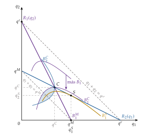
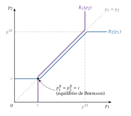
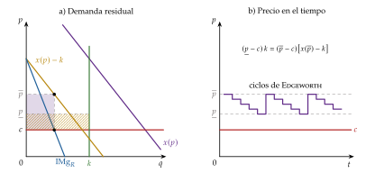
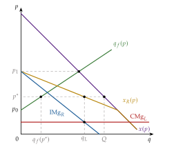
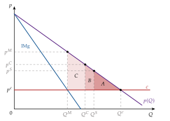
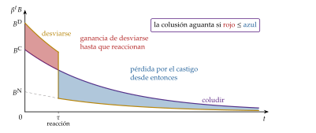
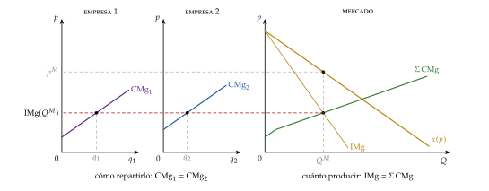
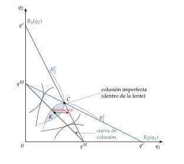
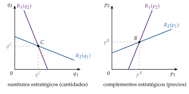

Tema 3.A.19
Análisis de mercados (IV). Teoría del oligopolio: soluciones no cooperativas y soluciones cooperativas.
Cournot, Stackelberg, Bertrand y sus salidas, liderazgo en precios, colusión tácita con el gatillo, el cártel y su reparto (Nash, núcleo, Shapley), clemencia.
Introducción
Enganche:
En 1776, Adam Smith advertía de que la gente del mismo oficio rara vez se reúne, ni siquiera para divertirse, sin que la conversación acabe en una conspiración contra el público o en alguna maquinación para subir los precios (Smith, 1776, lib. I, cap. 10, parte II).1
Casi dos siglos y medio después, en julio de 2016, la Comisión Europea multó con 2.926 millones de euros a 4 fabricantes de camiones (Daimler, DAF, Iveco y Volvo/Renault) que durante 14 años, de 1997 a 2011, se habían puesto de acuerdo en sus precios de catálogo. Un quinto miembro del cártel, MAN, no pagó nada: fue quien lo denunció (Comisión Europea, 2016). Con la multa de 2017 a Scania, es la mayor sanción a un cártel en la historia de la Unión Europea, 3.807 millones de euros (Comisión Europea, 2026).
Detrás está la pregunta de esta exposición: si a las empresas de un mercado les conviene ponerse de acuerdo, ¿por qué compiten? ¿Y por qué un acuerdo que ha durado 14 años se rompe cuando a uno de sus miembros le sale a cuenta denunciarlo?
Relevancia:
Empírica: muchos de los mercados que más pesan en el gasto de los hogares y de las empresas (telecomunicaciones, energía, banca, transporte aéreo, automóviles, plataformas digitales) tienen pocos vendedores. El margen medio de las empresas cotizadas de Estados Unidos sobre su coste marginal pasó del 21 % en 1980 al 61 % en 2016 (De Loecker, Eeckhout y Unger, 2020), y la Comisión Europea ha adoptado 162 decisiones contra cárteles desde 1990, con multas de más de 33.000 millones de euros antes de las rebajas de los tribunales (Comisión Europea, 2026).
Teórica: el oligopolio es el laboratorio en el que la teoría de juegos se hizo herramienta de la economía: Cournot (1838) anticipó en más de un siglo el equilibrio de Nash. Sus modelos son la base de la política comercial estratégica [ver tema 3.B.8], del dumping recíproco [ver tema 3.B.6] y de la competencia bancaria [ver tema 3.B.27].
Normativa y de política económica: con pocas empresas el precio queda por encima del coste marginal y no se cumple el primer teorema fundamental de la economía del bienestar (1TFEB) [ver tema 3.A.22]; si las empresas se ponen de acuerdo, la pérdida se acerca a la del monopolio. De ahí la política de defensa de la competencia [ver tema 3.A.20] [ver tema 3.B.39].
Contextualización:
La microeconomía explica los fenómenos agregados a partir de las decisiones de individuos que optimizan, el individualismo metodológico.2 El resultado de la interacción de consumidores y productores, el equilibrio de mercado, depende de la estructura de mercado: hay 2 estructuras polares, la competencia perfecta [ver tema 3.A.16] y el monopolio [ver tema 3.A.17], y 2 intermedias, la competencia monopolística [ver tema 3.A.18] y el oligopolio.3 Las 4 parten de la misma lista de supuestos (tabla 1), y esta exposición levanta el de mercado atomizado.
El oligopolio (del griego olígos, «pocos», y pōleîn, «vender») es la estructura de mercado con pocos vendedores, cada uno lo bastante grande para mover el precio. Lo que lo distingue es la interdependencia estratégica: el beneficio de cada empresa depende de sus decisiones y de las de las demás, y cada una lo sabe y lo tiene en cuenta al decidir, sabiendo que las demás también lo hacen.4 Por eso la teoría del oligopolio es teoría de juegos aplicada [ver tema 3.A.14].5
Desde un punto de vista histórico:
Los primeros modelos de oligopolio son anteriores a la teoría de juegos: el duopolio en cantidades de Cournot (1838), la crítica en precios de Bertrand (1883), las restricciones de capacidad de Edgeworth (1897) y el liderazgo de Stackelberg (1934).
La teoría de juegos nace con Theory of Games and Economic Behavior de John von Neumann y Oskar Morgenstern (von Neumann y Morgenstern, 1944), centrada en los juegos de suma cero y cooperativos. Nash (1950a) define el equilibrio de los juegos no cooperativos; después llegan la forma extensiva (Kuhn, 1953), los juegos repetidos (Aumann, 1959), la perfección en subjuegos, que Selten (1965) propone precisamente con un modelo de oligopolio, y la información incompleta (Harsanyi, 1967–1968).6
Stigler (1964) plantea el problema central de los cárteles: el mismo afán de beneficio que lleva a formarlos empuja a cada miembro a rebajar el precio en secreto. Friedman (1971) muestra que la repetición puede sostener la colusión sin acuerdos, y la nueva teoría de la organización industrial ordena todo esto con la teoría de juegos (Tirole, 1988).
Soluciones no cooperativas y cooperativas. El título usa una palabra con 2 sentidos que conviene separar:
por el resultado: en organización industrial, una solución es cooperativa (colusoria) si las empresas consiguen restringir la producción y acercarse al beneficio conjunto de monopolio, y no cooperativa (competitiva) si cada una maximiza el suyo;
por el instrumento: en teoría de juegos, un juego es cooperativo si los jugadores pueden firmar acuerdos vinculantes y formar coaliciones, y no cooperativo si cada uno decide por su cuenta [ver tema 3.A.14].
Las 2 cosas no coinciden: la colusión tácita (II.2) es un resultado cooperativo de un juego no cooperativo, sin contrato alguno; el cártel con acuerdos vinculantes (III.1) es el caso propiamente cooperativo, y el que plantea cómo repartir las ganancias (III.2). Esta exposición usa las 2 teorías.7
Problemática (preguntas clave):
¿Por qué no basta con que haya varias empresas para llegar al resultado competitivo, y cuánto se alejan de él? ¿Importa que compitan en cantidades o en precios, y que decidan a la vez o por turnos?
¿Por qué 2 empresas pueden bastar, en teoría, para el resultado de la competencia perfecta, y por qué casi nunca bastan en la práctica?
¿Pueden cooperar empresas que no pueden firmar contratos? ¿Qué hace sostenible un cártel y qué lo rompe?
Si cooperan, ¿cómo se reparten lo que ganan, y qué acuerdos son estables? ¿Qué puede hacer la política de competencia ante la colusión?
Estructura: la exposición se divide en 3 bloques, que van de la competencia a la cooperación.
I. Las soluciones no cooperativas: competencia en una sola vez: tras caracterizar el oligopolio (I.1), los 4 modelos clásicos según se compita en cantidades o en precios y se decida a la vez (juegos estáticos) o por turnos (juegos dinámicos secuenciales): Cournot (I.2), Stackelberg (I.3), Bertrand y las salidas a su paradoja (I.4) y el liderazgo en precios (I.5).
II. La competencia repetida: si la competencia se repite un número finito y conocido de veces, nada cambia (II.1); si no tiene un final conocido, las empresas pueden sostener sin contratos un resultado cooperativo, la colusión tácita (II.2).
III. Las soluciones cooperativas: el cártel que maximiza el beneficio conjunto (III.1), el reparto de sus ganancias (III.2) y sus límites, la entrada y la defensa de la competencia (III.3).
Un mismo hilo recorre los 3 bloques: todas las empresas ganarían si cada una produjera menos, pero a cada una, por separado, le conviene producir más. La exposición estudia cuándo gana la competencia y cuándo la cooperación.
3.A.19. Teoría del oligopolio
Introducción
I. Soluciones no cooperativas: competencia en una sola vez
1. Supuestos: se levanta el 4 (pocos vendedores) y, en general, el 5
2. Cournot: \(R_i(q_j)\), EN, \(\mathcal{L}_i=s_i/|\varepsilon_{Q,p}|\), \(n\to\infty\Rightarrow p\to c\)
3. Stackelberg: ENPS, ventaja de compromiso
4. Bertrand: \(p=c\) (paradoja) y sus salidas
5. Liderazgo en precios: empresa dominante y franja; comparación
II. Competencia repetida: colusión tácita
1. Horizonte finito: el EN de la etapa en cada periodo
2. Horizonte infinito: gatillo, \(\beta\geq(B^{\mathrm D}-B^{\mathrm C})/(B^{\mathrm D}-B^{\mathrm N})\); factores
III. Soluciones cooperativas
1. Cártel: monopolista multiplanta; incentivo a desviarse
2. Reparto: Nash, núcleo y valor de Shapley
3. Límites: entrada y defensa de la competencia (clemencia)
Conclusión
La exposición va de lo que pasa cuando las empresas se encuentran una sola vez y no pueden comprometerse (I: Cournot, Stackelberg, Bertrand y el liderazgo en precios, cada uno en una casilla de la tabla 2) a cómo la repetición permite cooperar sin contratos (II) y, por último, a la cooperación explícita: el cártel, el reparto de lo que gana y lo que la limita (III). Reparto del cante: introducción, 2′30″; I, 11′ (I.1, 1′; I.2, 3′30″; I.3, 1′30″; I.4, 3′30″; I.5, 1′30″); II, 7′ (II.1, 1′; II.2, 6′); III, 8′30″ (III.1, 3′; III.2, 3′; III.3, 2′30″), y conclusión, 1′. Los gráficos imprescindibles son las funciones de reacción de Cournot con los isobeneficios, que se completa con Stackelberg y, en el bloque III, con el cártel; la senda de beneficios del gatillo, y la columna de cantidades de la tabla comparativa. Las 2 funciones clave, el índice de Lerner con la cuota (2) y la condición de la colusión (3), se quedan en una esquina de la pizarra todo el cante. Conviene escribir el esquema al empezar.
I. Soluciones no cooperativas: competencia en una sola vez
En el cante: los supuestos en una frase, con la tabla como apoyo, y la rejilla de los 4 modelos (1′); Cournot con su gráfico de funciones de reacción y el índice de Lerner con la cuota, que se queda en la pizarra (3′30″); Stackelberg sobre el mismo gráfico (1′30″); Bertrand, la paradoja y sus salidas, cada una con el supuesto que levanta (3′30″); el liderazgo en precios de palabra y la tabla comparativa como cierre (1′30″). Son de profundización la existencia, unicidad y estabilidad del equilibrio de Cournot, las variaciones conjeturales, Cournot con costes privados (anexo C), los costes convexos y el detalle de Edgeworth. Las cuentas con demanda lineal están en los anexos A y B.
Empezamos por la situación más sencilla: las empresas se encuentran una sola vez en el mercado y no pueden firmar acuerdos que las obliguen. Seguimos la nomenclatura de los manuales de teoría de juegos [ver tema 3.A.14]: Cournot y Bertrand son juegos estáticos, porque las empresas deciden a la vez; Stackelberg y el liderazgo en precios son juegos dinámicos secuenciales, porque deciden por turnos y se resuelven por inducción hacia atrás (ENPS). La repetición, el otro juego dinámico, es el objeto del bloque II. Su conclusión anticipada: el resultado queda entre la competencia perfecta y el monopolio, y dónde exactamente depende de 2 cosas, la variable con la que compiten (la cantidad o el precio) y el orden en que deciden (a la vez o una detrás de otra). En todos los casos las empresas ganarían más si produjeran menos juntas.
Otra forma de verlo. En parte de la organización industrial y en muchos temarios de la oposición se llama «análisis estático» a todo lo que ocurre una sola vez, incluidos Stackelberg y el liderazgo en precios, y «dinámico» solo a la repetición.
Justificación: Stackelberg equivale a una empresa que maximiza en una sola etapa con una variación conjetural igual a la pendiente de la función de reacción de la seguidora, \(v_1=R_2'\) (variaciones conjeturales, en I.2).
Límite: en un juego simultáneo de una sola vez nadie puede reaccionar, así que una conjetura distinta de cero no es coherente (Tirole, 1988, cap. 5); el ENPS existe precisamente porque importa el orden. Por eso seguimos a los manuales.
Si pregunta el tribunal: es una cuestión de nombres. Lo importante es distinguir el orden de las jugadas (simultáneo o secuencial) y el número de encuentros (una vez o repetido). El desarrollo está en el tema de teoría de juegos [ver tema 3.A.14].
I.1. Caracterización del oligopolio
El oligopolio parte de la misma lista de supuestos que todas las estructuras de mercado (tabla 1) [ver tema 3.A.16] y levanta el supuesto 4: hay pocos vendedores, que se saben interdependientes. Casi siempre levanta también el 5: hay barreras que mantienen fijo su número.
| N.º | Supuesto | Qué significa |
|---|---|---|
| 1 | Agentes racionales | los consumidores maximizan su utilidad y las empresas, su beneficio |
| 2 | Información perfecta y simétrica | los consumidores conocen las características del producto y el precio, y las empresas, su tecnología y el precio; nadie sabe más que los demás |
| 3 | Producto homogéneo (sin sustitutivos cercanos) | los consumidores ven como sustitutivos perfectos las unidades de todas las empresas, de modo que solo les importa el precio |
| 4 | Mercado atomizado: muchos compradores y vendedores (precio-aceptantes) | cada uno es pequeño respecto al mercado y sus decisiones individuales no mueven el precio: todos son precio-aceptantes, y el precio lo determinan las decisiones de todos juntos, no las de ninguno en particular Se levanta: hay pocos vendedores, que se saben interdependientes: lo que hace cada uno afecta al beneficio de los demás, y lo tienen en cuenta; los compradores siguen siendo muchos y precio-aceptantes |
| 5 | Libre entrada y salida (a largo plazo) | a largo plazo, si hay beneficios extraordinarios, entran empresas hasta agotarlos, y si hay pérdidas, salen Se levanta: hay barreras de entrada, que mantienen fijo el número de empresas y protegen sus beneficios también a largo plazo |
Fuente: elaboración propia.
Supuesto a supuesto, el escenario base del oligopolio queda así:
Se mantiene: agentes racionales. Los consumidores maximizan su utilidad y las empresas, su beneficio. Además, la racionalidad de todos y la estructura del juego son conocimiento común: cada empresa sabe que las demás son racionales, sabe que ellas lo saben, y así sucesivamente [ver tema 3.A.14].
Se mantiene: información perfecta y simétrica. Cada empresa conoce la demanda y los costes de todas: son juegos con información completa. La extensión de Cournot con costes privados lo levanta (I.2) [ver tema 3.A.13].
Se mantiene: producto homogéneo. Con productos diferenciados, el oligopolio es el del tema de diferenciación de productos [ver tema 3.A.18].8
Se levanta: pocos vendedores (2, por sencillez, salvo que se diga otra cosa), que se saben interdependientes. Los compradores siguen siendo muchos y precio-aceptantes; los vendedores, al ser pocos, tienen poder de mercado.9
Se levanta: barreras de entrada, que mantienen fijo el número de empresas [ver tema 3.A.15]:
estratégicas: conductas de las empresas instaladas que disuaden la entrada (precio límite, capacidad excedente, proliferación de marcas);
legales o administrativas: licencias, patentes, concesiones o aranceles que excluyen a los competidores extranjeros;
tecnológicas: una escala mínima eficiente grande respecto al mercado deja sitio solo para unas pocas empresas: es el oligopolio natural [ver tema 3.A.16].10
Sin barreras, la amenaza de entrada limita lo que pueden ganar las empresas instaladas (III.3).
La consecuencia de levantar el supuesto 4 es la interdependencia estratégica, y la herramienta para analizarla es la teoría de juegos no cooperativos [ver tema 3.A.14]: los jugadores son las empresas; las estrategias, la cantidad o el precio; los pagos, los beneficios.
La función de reacción \(R_i(\cdot)\) de la empresa \(i\) es su mejor respuesta: lo que más le conviene hacer para cada decisión de las demás.
Un equilibrio de Nash (EN) es una combinación de decisiones en la que cada empresa da la mejor respuesta a lo que hacen las demás: nadie quiere cambiar la suya, dadas las de los otros.
En los juegos secuenciales se exige además que sea creíble lo que cada empresa haría en cualquier situación, también fuera del camino del equilibrio: es el equilibrio de Nash perfecto en subjuegos (ENPS), que se obtiene por inducción hacia atrás.
La pendiente de la función de reacción clasifica las variables de decisión (Bulow, Geanakoplos y Klemperer, 1985):
sustitutos estratégicos: si la rival es más agresiva, a mí me conviene serlo menos, y la función de reacción es decreciente. Es el caso de las cantidades: si la rival produce más, el precio baja y a mí me conviene producir menos;
complementos estratégicos: si la rival es más agresiva, a mí me conviene serlo más, y la función de reacción es creciente. Es el caso de los precios: si la rival baja el suyo, me conviene bajar el mío.11
Con 2 variables (cantidad o precio) y 2 órdenes (a la vez o una detrás de otra) salen los 4 modelos del bloque (tabla 2).
| Decisiones simultáneas (EN) (juegos estáticos) |
Decisiones secuenciales (ENPS) (juegos dinámicos) |
|
|---|---|---|
| Cantidades (sustitutos estratégicos) |
Cournot (1838) \(c<p^C<p^M\) (I.2) |
Stackelberg (1934) ventaja del primero (I.3) |
| Precios (complementos estratégicos) |
Bertrand (1883) \(p^B=c\) (I.4) |
liderazgo en precios empresa dominante (I.5) |
Fuente: elaboración propia.
I.2. Competencia simultánea en cantidades: modelo de Cournot (1838)
Empezamos por la primera casilla de la tabla, la más antigua y la que sirve de referencia a las demás: las empresas eligen cantidades y a la vez.
a) Idea
Cournot (1838, cap. 7) estudia 2 propietarios de manantiales de agua mineral que deciden cuánta agua llevar al mercado; el precio es el que vacía el mercado para la cantidad total, como si lo fijara un subastador. Cada uno elige su cantidad tomando como dada la del otro.12
b) Modelo
i) Supuestos
\(n\) empresas (2 en los gráficos) venden un producto homogéneo y eligen a la vez cuánto producir, \(q_i\); la producción total es \(Q=\sum_iq_i\), y \(Q_{-i}\) la de las demás.
Demanda inversa decreciente, \(p(Q)\), y costes \(C_i(q_i)\); en el caso lineal, \(p(Q)=a-bQ\) y \(C_i(q_i)=c_i\,q_i\), con \(a>c_i\).
Cada empresa toma como dada la cantidad de las demás: no espera que reaccionen a la suya (conjetura de Nash o variación conjetural nula; véanse las extensiones).
El precio se ajusta hasta vaciar el mercado.
ii) Desarrollo
Cada empresa resuelve \[\begin{array}{rl}\displaystyle \max_{q_i} & \displaystyle B_i=p\big(q_i+Q_{-i}\big)\,q_i-C_i(q_i) \\ \text{s.a.} & q_i\geq 0\end{array}\] y la condición de primer orden iguala su ingreso marginal y su coste marginal:13 \[\tag{1} \underbrace{p(Q)+p'(Q)\,q_i}_{\mathrm{IMg}_i}=\mathrm{CMg}_i(q_i).\] El ingreso marginal solo recoge cómo baja el precio sobre las unidades propias: por eso cada empresa produce más de lo que convendría al conjunto.
Despejando \(q_i\) se obtiene la función de reacción \(q_i=R_i(Q_{-i})\). Con demanda lineal y coste marginal constante, en el duopolio es una recta de pendiente \(-1/2\) que corta el eje en la cantidad de monopolio de la empresa \(i\) (si la otra no produce, \(i\) es monopolista): \[R_i(q_j)=\frac{a-c_i}{2b}-\frac{1}{2}\,q_j.\]
Las funciones de reacción son decrecientes y de pendiente menor que uno en valor absoluto si se cumplen las condiciones de Hahn (Hahn, 1962): (H1) \(p'(Q)+q_ip''(Q)<0\), el ingreso marginal de \(i\) baja cuando las demás producen más (las cantidades son sustitutos estratégicos), y (H2) \(p'(Q)-C_i''(q_i)<0\), la demanda corta a la curva de coste marginal desde arriba. Derivando (1), el numerador y los 2 sumandos del denominador son negativos: \[R_i'=-\frac{p'+q_ip''}{(p'+q_ip'')+(p'-C_i'')}\in(-1,\,0).\]
El equilibrio de Cournot es el punto en que se cortan las funciones de reacción: cada empresa produce su mejor respuesta a lo que de verdad producen las demás. Con \(n\) empresas iguales y demanda lineal (anexo A), \[q^C=\frac{a-c}{(n+1)\,b},\qquad Q^C=\frac{n}{n+1}\cdot\frac{a-c}{b},\qquad p^C=\frac{a+n\,c}{n+1},\] y en el duopolio, \(q^C=(a-c)/3b\), \(p^C=(a+2c)/3\) y un beneficio de \((a-c)^2/9b\) para cada empresa.
Gráficamente (gráfico 1), en el plano \((q_1,q_2)\), los isobeneficios de la empresa 1 son curvas con forma de U invertida, con su máximo sobre \(R_1(q_2)\), y su beneficio es mayor cuanto más abajo están (cuanto menos produce la rival); el más bajo de todos se reduce al punto de monopolio, \((q^M,0)\). El equilibrio está donde se cortan \(R_1\) y \(R_2\), y allí los isobeneficios de las 2 empresas se cortan en lugar de ser tangentes. Las rectas \(q_1+q_2=q^M\) y \(q_1+q_2=q^c\), con la cantidad total de monopolio y la de competencia perfecta, quedan a uno y otro lado del equilibrio: Cournot produce más que el monopolio y menos que la competencia.

Fuente: elaboración propia a partir de Pindyck y Rubinfeld (2009).
Existencia, unicidad y estabilidad del equilibrio de Cournot (Vives, 1999, cap. 4).
Existencia: si el beneficio de cada empresa es cuasicóncavo en su propia cantidad, el equilibrio existe por un teorema de punto fijo, como todo EN con acciones continuas [ver tema 3.A.14]. Novshek (1985) lo prueba sin cuasiconcavidad, solo con (H1).
Unicidad: si \(|R_i'|<1\), la aplicación de mejores respuestas es una contracción y solo tiene un punto fijo; en el duopolio, las 2 funciones de reacción se cortan una sola vez.
Estabilidad: el EN dice que, si se llega a él, nadie quiere salir, pero no cómo se llega. Cournot propuso un ajuste en el que cada empresa responde a lo que la otra hizo el periodo anterior, \(q_i(t+1)=R_i\big(q_j(t)\big)\). En el duopolio converge si \(|R_1'R_2'|<1\), y basta con \(|R_i'|<1\): con demanda lineal, \(R_i'=-1/2\) y la senda se acerca al equilibrio en una «telaraña» entre las 2 funciones de reacción (Hahn, 1962). Con \(n\) empresas iguales y lineales, el mismo ajuste oscila sin acercarse con \(n=3\) y se aleja desde \(n=4\) (Theocharis, 1960): la estabilidad depende del proceso de ajuste que se suponga, que está fuera del modelo, porque este es estático.
Dominancia: en el duopolio lineal el equilibrio se obtiene también eliminando de forma iterada las estrategias estrictamente dominadas (Gibbons, 1992, párr. 1.2.A); con 3 o más empresas, no.
iii) Implicaciones
Es un equilibrio de Nash: ninguna empresa quiere cambiar su cantidad dada la de la otra. No es un equilibrio en estrategias dominantes: si la otra produjera otra cantidad, cada una cambiaría la suya.
Poder de mercado proporcional a la cuota. Reordenando (1), con \(s_i\equiv q_i/Q\) la cuota de mercado de la empresa \(i\) y \(\varepsilon_{Q,p}\equiv(dQ/dp)(p/Q)<0\) la elasticidad de la demanda de mercado,14
\[\mathcal{L}_i\equiv\frac{p-\mathrm{CMg}_i}{p}=\frac{s_i}{|\varepsilon_{Q,p}|}\tag{2}\]
En palabras: cada empresa carga un margen tanto mayor cuanto mayor es su cuota y menos elástica la demanda. Es la regla de la elasticidad inversa del monopolio [ver tema 3.A.17] multiplicada por la cuota: con \(s_i=1\), monopolio; con \(s_i\to0\), competencia perfecta [ver tema 3.A.16]. Las empresas con menor coste marginal tienen más cuota y más margen.
La concentración mide el poder de mercado. Ponderando por las cuotas, el margen medio de la industria es \[\sum_is_i\mathcal{L}_i=\frac{\mathrm{IHH}}{|\varepsilon_{Q,p}|},\qquad \mathrm{IHH}\equiv\sum_is_i^2,\] con IHH el índice de Herfindahl-Hirschman (Cowling y Waterson, 1976): así se justifica que las autoridades de competencia midan la concentración con el IHH [ver tema 3.A.20]. En la telefonía móvil en España, tras la fusión de Orange y MásMóvil, 4 operadores tienen el 96,8 % de las líneas y el IHH ronda 0,28 (2.770 en la escala de 0 a 10.000 que usan las autoridades) (Comisión Nacional de los Mercados y la Competencia, 2026b).
Bienestar: \(Q^M<Q^C<Q^c\) y \(p^c<p^C<p^M\). Hay 2 ineficiencias:
asignativa: \(p>\mathrm{CMg}_i\), de modo que se produce menos de lo eficiente (pérdida irrecuperable de eficiencia) y no se cumple el 1TFEB [ver tema 3.A.22];
productiva: con costes distintos, los costes marginales de las empresas no se igualan (\(s_i>s_j\Leftrightarrow\mathrm{CMg}_i<\mathrm{CMg}_j\)), de modo que la producción total no se obtiene al menor coste: la empresa eficiente produce más que la otra, pero no tanto como convendría.
Ineficiente para las propias empresas: en el equilibrio los isobeneficios se cortan, de modo que en la «lente» que forman entre ellos las 2 estarían mejor. Las 2 empresas ganarían produciendo menos, pero a cada una le conviene producir más: es un dilema del prisionero [ver tema 3.A.14]. Veremos que la repetición sin final conocido (II.2) y los acuerdos explícitos (III.1) pueden resolverlo.
Convergencia a la competencia: cuando \(n\to\infty\), \(p^C=(a+nc)/(n+1)\to c\) y, con empresas iguales, \(\mathcal{L}=1/(n\,|\varepsilon_{Q,p}|)\to0\). Es la «concurrencia indefinida» de Cournot (1838, cap. 8): el modelo une el monopolio (\(n=1\)) y la competencia perfecta (\(n\to\infty\)).
c) Extensiones
Variaciones conjeturales (Bowley, 1924). Si la empresa \(i\) cree que, cuando produce una unidad más, las demás cambian su producción en \(v_i\equiv dQ_{-i}/dq_i\) (su variación conjetural), su condición de primer orden y su margen son \[p(Q)+p'(Q)\,q_i\,(1+v_i)=\mathrm{CMg}_i\qquad\Longrightarrow\qquad\mathcal{L}_i=\frac{s_i\,(1+v_i)}{|\varepsilon_{Q,p}|}.\]
Con \(v_i=0\) se obtiene Cournot; con \(v_i=-1\) (las demás compensan cualquier aumento), la competencia perfecta; con empresas iguales y \(v_i=n-1\) (las demás imitan cualquier aumento y las cuotas no cambian), el monopolio, es decir, la colusión. La líder de Stackelberg actúa con \(v_1=R_2'\) (I.3).
El enfoque resume todos los modelos en un parámetro, que la organización industrial empírica estima como «parámetro de conducta». Pero tiene un problema de fondo: en un juego simultáneo de una sola vez nadie puede reaccionar, de modo que cualquier conjetura distinta de cero es incoherente con el propio modelo (Tirole, 1988, cap. 5). Exigir que la conjetura coincida con la pendiente de la verdadera función de reacción (conjeturas consistentes: Bresnahan (1981)) no resuelve el problema: la forma de hacerlo bien es modelizar el juego dinámico: el orden de las jugadas (I.3) o la repetición (bloque II).
Información incompleta: Cournot con costes privados. Si la empresa 2 conoce su coste y la 1 solo sabe que es alto, \(c_{\mathrm A}\), con probabilidad \(\pi\), o bajo, \(c_{\mathrm B}\), el juego es bayesiano (Harsanyi, 1967–1968): la 2 elige una cantidad para cada tipo, \(q_2(c_{\mathrm A})\) y \(q_2(c_{\mathrm B})\), y la 1 responde a la cantidad esperada de la 2. El equilibrio bayesiano de Nash es la terna \(\big(q_1^*,\,q_2^*(c_{\mathrm A}),\,q_2^*(c_{\mathrm B})\big)\) (Gibbons, 1992, párr. 3.1.A) [ver tema 3.A.14].
Implicaciones: comparada con la información completa, la empresa informada de coste alto produce más y gana más, y la de coste bajo produce menos y gana menos, porque la rival responde a la media. A la de coste bajo le gustaría demostrar que lo es: es el origen de la señalización [ver tema 3.A.13]. Desarrollo y ejemplo en el anexo C.
Colusión: si las 2 empresas pudieran firmar un acuerdo, se repartirían la cantidad de monopolio; es el cártel (III.1).
d) Evidencia empírica
e) Valoración
Con supuestos muy estilizados, Cournot da predicciones razonables: el precio queda entre el competitivo y el de monopolio, y baja al entrar empresas. Pero tiene 2 críticas que abren los modelos siguientes: las empresas no siempre deciden a la vez (Stackelberg, I.3), y en la práctica son ellas, y no un subastador, quienes fijan el precio (Bertrand, I.4).
I.3. Competencia secuencial en cantidades: modelo de Stackelberg (1934)
Mantenemos las cantidades y cambiamos el orden: ¿qué pasa si una empresa decide antes que la otra?
a) Idea
En muchos mercados una empresa establecida decide su capacidad antes que las demás. Stackelberg (1934) estudia qué pasa si una empresa (la líder) elige su cantidad primero, de forma irreversible, y la otra (la seguidora) la observa antes de elegir la suya.
b) Modelo
i) Supuestos
Los de Cournot con 2 empresas, salvo el orden: la empresa 1 elige \(q_1\); la 2 la observa y elige \(q_2\). Es un juego dinámico secuencial con información perfecta, en 2 etapas, que se resuelve por inducción hacia atrás [ver tema 3.A.14].
ii) Desarrollo
Segunda etapa: la seguidora responde a lo que ve con su función de reacción de Cournot, \(q_2=R_2(q_1)\). A diferencia de Cournot, no responde a lo que espera que haga la líder, sino a lo que ya ha hecho.
Primera etapa: la líder anticipa esa respuesta y la incorpora a su problema, \[\begin{array}{rl}\displaystyle \max_{q_1} & \displaystyle B_1=p\big(q_1+R_2(q_1)\big)\,q_1-C_1(q_1) \\ \text{s.a.} & q_1\geq 0\end{array}\] cuya condición de primer orden es \[p(Q)+p'(Q)\,q_1\,\big[1+R_2'(q_1)\big]=\mathrm{CMg}_1(q_1).\] El corchete es la diferencia con Cournot: la líder sabe que cada unidad que añade desplaza parte de la producción de la seguidora (\(R_2'<0\): su variación conjetural es negativa y, además, correcta), de modo que el precio baja menos de lo que bajaría si la seguidora no reaccionara, y le conviene producir más.
Con demanda lineal y costes iguales (anexo B): \(q_1^S=(a-c)/2b\), la cantidad de monopolio; \(q_2^S=(a-c)/4b\); \(p^S=(a+3c)/4\); y la líder gana \((a-c)^2/8b\) y la seguidora \((a-c)^2/16b\), frente a \((a-c)^2/9b\) cada una en Cournot.
Gráficamente (gráfico 1), la líder elige, sobre la función de reacción de la seguidora, el punto que toca su isobeneficio más bajo (el de mayor beneficio): el de tangencia, S, a la derecha y por debajo del de Cournot, C. Su propia función de reacción deja de importar, porque no reacciona: decide antes.
iii) Implicaciones
Es un ENPS. El resultado de Cournot también puede ser un EN de este juego, si la seguidora amenaza con producir \(q^C\) haga lo que haga la líder; pero esa amenaza no es creíble: si la líder produce más, a la seguidora ya no le conviene cumplirla. La perfección en subjuegos la descarta.
Ventaja del primero en mover, que es de compromiso, no de información: la líder gana porque no puede rectificar; si pudiera volver a decidir tras ver a la seguidora, volvería a su función de reacción. Por eso la ventaja exige un compromiso creíble, como una inversión irreversible en capacidad (la disuasión de la entrada de Dixit [ver tema 3.A.15]). Con complementos estratégicos (precios con producto diferenciado), la ventaja es del segundo, que puede cobrar un poco menos que la líder (Gal-Or, 1985) [ver tema 3.A.18].
Bienestar: \(Q^S=3(a-c)/4b>Q^C\), de modo que Stackelberg es más competitivo que Cournot, aunque sigue habiendo \(p>c\). Y tampoco es eficiente para las empresas: las 2 ganarían produciendo menos juntas.
c) Valoración
El modelo explica la ventaja de las empresas establecidas, pero no dice quién lidera: el orden es exógeno. Y sigue suponiendo que las empresas eligen cantidades: ¿qué pasa si eligen precios?
I.4. Competencia simultánea en precios: modelo de Bertrand (1883)
Volvemos a las decisiones simultáneas, pero ahora con la variable que las empresas eligen de verdad en la mayoría de los mercados: el precio. El resultado es tan extremo que da nombre a una paradoja, y sus salidas ordenan buena parte de la teoría.
a) Idea
Al reseñar el libro de Cournot 45 años después, Bertrand (1883) objeta que las empresas no eligen cantidades y esperan a que un subastador fije el precio: eligen precios. ¿Qué pasa entonces?
b) Modelo
i) Supuestos
2 empresas venden un producto homogéneo con el mismo coste marginal constante \(c\), sin restricciones de capacidad (cada una puede atender todo el mercado), y eligen a la vez su precio, una sola vez.
Los consumidores compran a la más barata; si los precios son iguales, se reparten a partes iguales. Con \(x(p)\) la demanda de mercado, la de la empresa \(i\) es \[x_i(p_i,p_j)=\begin{cases}x(p_i) & \text{si } p_i<p_j,\\ \tfrac12\,x(p_i) & \text{si } p_i=p_j,\\ 0 & \text{si } p_i>p_j.\end{cases}\]
ii) Desarrollo
La demanda de cada empresa salta al cruzar el precio de la otra, de modo que no hay condición de primer orden que valga: el equilibrio se encuentra razonando. La mejor respuesta de \(i\) al precio de \(j\) es:
si \(p_j>p^M\), el precio de monopolio, \(p^M\): se queda todo el mercado al mejor precio posible;
si \(c<p_j\leq p^M\), un precio un céntimo por debajo de \(p_j\), para quedarse todo el mercado (con precios continuos no hay una mejor respuesta exacta: siempre cabe acercarse más);
si \(p_j\leq c\), no le conviene vender: cualquier \(p_i\geq c\) le da un beneficio nulo, y rebajar le daría pérdidas.
El único EN es \(p_1^B=p_2^B=c\) (Mas-Colell, Whinston y Green, 1995, párr. 12.C). Ningún otro par de precios lo es: si los 2 cobran lo mismo por encima de \(c\), a cada uno le conviene rebajar un poco y quedarse con todo el mercado; si uno cobra más que el otro y el más barato gana algo, a este le conviene subir hasta justo por debajo del otro; y nadie cobra por debajo de \(c\). En \(p=c\), nadie quiere bajar (tendría pérdidas) ni subir (perdería todas sus ventas).
Gráficamente (gráfico 2), las funciones de reacción en el plano \((p_1,p_2)\) van justo por debajo de la bisectriz entre \(c\) y \(p^M\) y se cortan en \((c,c)\). Son crecientes en ese tramo: los precios son complementos estratégicos.

Fuente: elaboración propia.
iii) Implicaciones
Paradoja de Bertrand: con solo 2 empresas, el precio es el coste marginal y el beneficio es nulo, el mismo resultado que con infinitas empresas en competencia perfecta. El resultado es eficiente [ver tema 3.A.22], aunque no para las empresas, que ganarían cooperando. Y contradice la intuición y los datos: en los mercados con pocas empresas se observan márgenes positivos.
La paradoja descansa en 5 supuestos: costes marginales iguales, producto homogéneo, sin restricciones de capacidad, un contexto estático (una sola vez) y sin cooperación entre las empresas.15 Levantar cada uno es una salida.
c) Extensiones: las salidas a la paradoja
Costes marginales distintos, \(c_1<c_2\). La empresa eficiente cobra un céntimo por debajo de \(c_2\) y se queda todo el mercado, con un beneficio de casi \((c_2-c_1)\,x(c_2)>0\); si \(c_2\) supera su precio de monopolio, \(p^M(c_1)\), cobra este. Hay beneficio, pero la empresa ineficiente no vende nada, mientras que en Cournot vende menos pero vende: con precios, la ventaja de costes se lleva todo el mercado.
Costes marginales crecientes (rendimientos decrecientes). En palabras sencillas: si producir cada unidad adicional cuesta más, a la empresa que rebaja el precio ya no le conviene atender a todo el mercado, y el «todo o nada» que lleva a \(p=c\) desaparece. Con costes convexos, a un precio \(p\) cada empresa querría vender como mucho su oferta competitiva \(S_i(p)\), la cantidad con la que \(p=\mathrm{CMg}_i\) (Vives, 1999, cap. 5). El resultado depende de si puede limitarse a vender eso:
si puede racionar (vender solo \(S_i(p)\) y dejar sin atender al resto), el precio competitivo \(p^c\), con \(S_1(p^c)+S_2(p^c)=x(p^c)\), no es un equilibrio: si la empresa 1 lo sube un poco, la 2 no atiende a más clientes que \(S_2(p^c)\), y los que quedan compran a la 1, que tiene así una demanda residual positiva y gana más (en \(p^c\) el margen sobre la última unidad es nulo, de modo que subir el precio solo tiene efectos favorables de primer orden). Tampoco lo es un precio común por encima de \(p^c\): a ese precio se demanda menos de lo que las 2 querrían vender, y a cada una le conviene rebajar un poco para vender más. No hay equilibrio en estrategias puras; lo hay en mixtas, con precios por encima del competitivo;
si está obligada a atender toda la demanda que le llega (servicios regulados, reputación), hay muchos equilibrios en estrategias puras, un intervalo de precios que incluye el competitivo y otros por encima de él: rebajar el precio obliga a servir a todo el mercado con costes marginales crecientes, y puede no compensar (Dastidar, 1995).
En los 2 casos el precio puede quedar por encima del coste marginal: los rendimientos decrecientes suavizan la competencia en precios y devuelven a las empresas parte del poder de mercado, con la consiguiente pérdida de bienestar frente a la competencia perfecta. La restricción de capacidad es el caso extremo: coste marginal constante hasta la capacidad e infinito a partir de ella.
Capacidad limitada: los ciclos de Edgeworth. Edgeworth (1897) levanta el supuesto de que cada empresa puede atender todo el mercado. En palabras sencillas: si la rival no puede servir a más clientes de los que ya tiene, subir el precio ya no me deja sin ventas, y el precio no baja hasta el coste marginal. Es lo que pasa con 2 hoteles de habitaciones fijas en temporada alta: el que sube el precio sigue llenando, porque el otro ya está lleno.
Supuestos: los de Bertrand, pero cada empresa puede producir como mucho \(k\) unidades,16 con \(k<x(c)\) (ninguna puede atender sola el mercado al precio competitivo) y \(2k\geq x(c)\) (entre las 2, sí). Los clientes que no consiguen comprar a la más barata compran a la otra, empezando por los que más valoran el bien (racionamiento eficiente), de modo que la más cara se enfrenta a la demanda residual \(x(p)-k\).
Desarrollo (gráfico 3):
\(p=c\) no es un equilibrio: si una empresa sube el precio, la otra no puede atender a más de \(k\) clientes, y la primera vende a los que quedan con margen positivo;
la empresa que sube elige el precio de monopolio sobre la demanda residual, \(\overline{p}=\arg\max_p\,(p-c)\big[x(p)-k\big]\);
pero entonces a la rival le conviene cobrar un poco menos que \(\overline{p}\) y vender toda su capacidad; la otra responde igual, y el precio baja, rebaja a rebaja;
hasta un precio \(\underline{p}\) en el que vender toda la capacidad da lo mismo que volver a \(\overline{p}\) con la demanda residual, \((\underline{p}-c)\,k=(\overline{p}-c)\big[x(\overline{p})-k\big]\): por debajo, a una de ellas le conviene saltar otra vez a \(\overline{p}\), y vuelta a empezar.
Implicaciones: el precio oscila entre \(\underline{p}\) y \(\overline{p}\), los ciclos de Edgeworth, y no hay equilibrio en estrategias puras, aunque sí en mixtas (Levitan y Shubik, 1972). Los precios quedan por encima del coste marginal. Si la capacidad es pequeña respecto al mercado, sí hay equilibrio en puras: el precio que vacía el mercado con las 2 capacidades llenas, \(p(2k)\), porque nadie vende más rebajando y a ninguna le conviene subir.
Evidencia: con empresas que mueven por turnos, los ciclos de Edgeworth son un equilibrio (Maskin y Tirole, 1988), y se observan en los precios de la gasolina, con subidas bruscas seguidas de bajadas graduales, como en Perth (Australia) (Byrne y de Roos, 2019).

Fuente: elaboración propia a partir de Vives (1999, cap. 5).
Vídeo de repaso, en inglés: «Duopoly Models: Bertrand and Edgeworth», https://youtu.
Capacidad elegida antes: Kreps y Scheinkman. Kreps y Scheinkman (1983) unen las 2 ideas en un juego en 2 etapas: primero cada empresa elige su capacidad, con un coste por unidad; después, vistas las capacidades, compiten en precios como en Edgeworth, con racionamiento eficiente. Por inducción hacia atrás, en la segunda etapa el precio es el que vacía el mercado con las capacidades llenas, y en la primera las empresas eligen capacidades sabiéndolo: el único resultado del ENPS es el de Cournot. Elegir la capacidad es elegir la cantidad. El resultado depende de la regla de racionamiento: con racionamiento proporcional, la competencia es más dura que en Cournot (Davidson y Deneckere, 1986).
Producto diferenciado: si los productos no son sustitutivos perfectos, quien cobra un poco más no lo pierde todo, y el precio de Bertrand queda por encima del coste marginal; y, con la misma demanda, Bertrand sigue siendo más competitivo que Cournot, \(p^B<p^C\) (Singh y Vives, 1984) [ver tema 3.A.18].
Contexto dinámico, con repetición: si las empresas se encuentran muchas veces, pueden sostener precios altos sin acuerdos (bloque II).
Cooperación: si pueden firmar acuerdos, el cártel (bloque III).
d) Valoración: ¿Cournot o Bertrand?
Los supuestos de Bertrand parecen más realistas (las empresas fijan precios), pero sus predicciones lo son menos: con 2 empresas no basta para llegar a la competencia perfecta. Kreps y Scheinkman muestran que no son modelos rivales, sino de mercados distintos:17
Cournot describe los mercados en que la capacidad se decide antes de vender y es cara de cambiar (acero, cemento, transporte aéreo en una ruta): las cantidades son sustitutos estratégicos y la competencia es más suave;
Bertrand, los mercados en que sobra capacidad o se produce por encargo, y el precio es la variable que se ajusta: los precios son complementos estratégicos y la competencia es más dura.
Queda una pregunta: ¿qué pasa si una empresa fija el precio antes que las demás?
I.5. Competencia secuencial en precios: modelo de liderazgo en precios
La última casilla de la tabla: precios y decisiones por turnos.
a) Idea
Con producto homogéneo y 2 empresas iguales, fijar el precio primero no da ventaja: la seguidora cobraría un céntimo menos, y se vuelve a \(p=c\). El liderazgo en precios tiene sentido cuando hay una empresa dominante, grande y de costes bajos, rodeada de una franja competitiva de empresas pequeñas que aceptan el precio que ella fija. El modelo se remonta a Forchheimer (1908).
b) Modelo
i) Supuestos
Producto homogéneo y demanda de mercado \(x(p)\).
La franja, de muchas empresas pequeñas y precio-aceptantes, ofrece \(q_f(p)\), creciente: cada una produce hasta que su coste marginal iguala el precio.
La empresa dominante, con coste marginal \(\mathrm{CMg}_L\), fija el precio sabiendo cuánto venderá la franja.
ii) Desarrollo
A cada precio, a la dominante le queda la demanda residual \(x_R(p)=x(p)-q_f(p)\), y es monopolista de ella [ver tema 3.A.17]: produce la cantidad \(q_L\) con la que su ingreso marginal residual iguala su coste marginal, \[\mathrm{IMg}_R(q_L)=\mathrm{CMg}_L(q_L),\] y fija el precio \(p^*\) que corresponde a esa cantidad en la demanda residual. La residual es quebrada: por debajo del precio \(p_0\) al que la franja deja de producir coincide con la de mercado, \(x_R=x\), y a partir del precio \(p_1\) al que la franja cubre toda la demanda es nula. La franja vende \(q_f(p^*)\), y la producción total es \(q_L+q_f(p^*)\) (gráfico 4).
Su margen es el de un monopolista sobre una demanda más elástica que la de mercado. Con \(s_L\) su cuota y \(\varepsilon_f\geq0\) la elasticidad de la oferta de la franja (Landes y Posner, 1981), \[\mathcal{L}_L=\frac{s_L}{|\varepsilon_{Q,p}|+(1-s_L)\,\varepsilon_f}:\] el poder de mercado no depende solo de la cuota, sino de lo que puede crecer la franja si sube el precio.

Fuente: elaboración propia.
iii) Implicaciones
El precio queda entre el competitivo y el de monopolio, más cerca del primero cuanto más elástica es la oferta de la franja. La franja gana más que en competencia perfecta: vende cuanto quiere al precio que sostiene la dominante, que es la que reduce su producción.
A largo plazo, si la franja puede crecer o entrar, la cuota de la dominante se erosiona. Y el liderazgo puede ser también una forma de coordinarse: si todas siguen a la que mueve primero, la líder señala el precio colusorio sin necesidad de acuerdo (II.2).
c) Valoración
El modelo supone, y no explica, quién es la dominante y por qué la franja no se coordina. Además, con producto diferenciado, en la competencia en precios la ventaja es del segundo en mover (Gal-Or, 1985) [ver tema 3.A.18].
Comparación de las soluciones no cooperativas (demanda \(p=a-bQ\) y 2 empresas con coste marginal \(c\)). Cuanto más se produce, menor es la pérdida irrecuperable de eficiencia (PIE): Bertrand da la competencia perfecta; Stackelberg es más competitivo que Cournot, y el monopolio, o el cártel, es el peor (gráfico 5 y tabla 3). En el gráfico, la PIE es A en Stackelberg, A+B en Cournot y A+B+C en el monopolio o el cártel.

Fuente: elaboración propia.
| Estructura | Producción | Margen \(p-c\) |
Beneficio | EC | PIE |
|---|---|---|---|---|---|
| Competencia perfecta o Bertrand | \(1\) | \(0\) | \(0\) | \(1/2\) | \(0\) |
| Stackelberg | \(3/4\) | \(1/4\) | \(3/16\) | \(9/32\) | \(1/32\) |
| Cournot | \(2/3\) | \(1/3\) | \(2/9\) | \(2/9\) | \(1/18\) |
| Cournot con \(n\) empresas | \(\dfrac{n}{n+1}\) | \(\dfrac{1}{n+1}\) | \(\dfrac{n}{(n+1)^2}\) | \(\dfrac{n^2}{2(n+1)^2}\) | \(\dfrac{1}{2(n+1)^2}\) |
| Monopolio o cártel | \(1/2\) | \(1/2\) | \(1/4\) | \(1/8\) | \(1/8\) |
Fuente: elaboración propia.
Recapitulación del bloque I: cuando las empresas se encuentran una sola vez, el resultado está entre la competencia perfecta y el monopolio y depende de la variable y del orden: con Bertrand, \(p=c\); con Stackelberg, Cournot y el liderazgo en precios, en medio. Pero en todos los casos las empresas ganarían más produciendo menos juntas: el equilibrio no es eficiente para ellas. ¿Pueden cooperar sin un contrato? Es la pregunta del bloque siguiente.
II. Competencia repetida: de la competencia a la colusión tácita
En el cante: el horizonte finito en una frase (1′); la condición de la colusión (3), que se recuadra y se queda en la pizarra, con su gráfico del beneficio en el tiempo, \(\beta\geq1-1/n\) con Bertrand y el teorema de tradición oral aplicado (4′); Green y Porter, Rotemberg y Saloner y los factores que facilitan o dificultan la colusión, con la tabla como apoyo (2′). La tabla de estrategias de los juegos repetidos, los castigos óptimos y la renegociación son de profundización; la derivación de la condición y el caso de Cournot están en el anexo D.
En el bloque anterior las empresas se encontraban una sola vez. Pero las empresas de verdad compiten un día tras otro, y lo que hagan hoy influye en cómo las tratarán sus rivales mañana. Su conclusión anticipada: si el final del juego es incierto y las empresas son pacientes, la amenaza de una guerra de precios basta para sostener precios altos sin ningún acuerdo: es la colusión tácita, un resultado cooperativo alcanzado con un equilibrio no cooperativo.
II.1. Horizonte finito
a) Idea
¿Basta con repetir el juego de Bertrand un número conocido de veces para escapar de la paradoja? Este es, además, uno de los motivos por los que se estudia la competencia en un contexto dinámico: ver si la repetición devuelve realismo a la paradoja.
b) Modelo
i) Supuestos
2 empresas (el resultado vale para \(n\)) con el mismo coste marginal \(c\) compiten en precios, a la Bertrand, durante un número finito de periodos, y el último es conocido.
El juego de cada periodo, el juego de etapa, es siempre el mismo: no hay inversiones ni cambios en el entorno que alteren las condiciones de un periodo a otro. Un juego así, la repetición de un juego estático, se llama juego repetido o superjuego.
Dentro de cada periodo los precios se eligen a la vez; al final del periodo cada empresa ve lo que hizo la otra. Cada empresa maximiza la suma descontada de sus beneficios con el factor de descuento \(\beta\equiv1/(1+\rho)\) [ver tema 3.A.14].
ii) Desarrollo
Por inducción hacia atrás: en el último periodo no hay futuro que proteger, y se juega el EN de la etapa, \(p_1=p_2=c\). En el penúltimo, lo que pase mañana ya está decidido, haga lo que haga hoy cada empresa, y hoy vuelve a jugarse el EN de la etapa. Y así hasta el primero.
iii) Implicaciones
El único ENPS es \(p=c\) en todos los periodos: con un final conocido y un único EN en la etapa, la repetición no saca de la paradoja.18
II.2. Horizonte infinito
a) Idea
Si el juego no tiene un último periodo conocido (porque es infinito o porque, en cada periodo, hay una probabilidad de que continúe), la inducción hacia atrás no tiene por dónde empezar, y el futuro puede disciplinar el presente: si me desvío hoy, mañana me castigarán. Friedman (1971) muestra que eso basta para sostener precios de colusión.
b) Modelo
i) Supuestos
Los del horizonte finito, salvo que el juego se repite indefinidamente.19 Hay \(n\) empresas iguales, y cada una observa los precios de las demás al final de cada periodo.
ii) Desarrollo
Estrategia incondicionada: cobrar \(p=c\) pase lo que pase, la repetición del EN de la etapa, como en el horizonte finito. Es siempre un ENPS, pero no saca de la paradoja.
Estrategias condicionadas: el precio de cada periodo depende de lo que ha pasado antes. La más sencilla es la del gatillo (trigger) de Friedman (1971): cobrar un precio de colusión entre \(c\) y \(p^M\) mientras todas lo hayan cobrado y, si alguna se desvía, volver a \(p=c\) para siempre. Una sola desviación «dispara» el castigo.
Con \(B^{\mathrm C}\) el beneficio por periodo de cada empresa si todas coluden, \(B^{\mathrm D}\) el del periodo en que se desvía y \(B^{\mathrm N}\) el del EN de la etapa (el castigo),20 a una empresa no le conviene desviarse si lo que gana coludiendo siempre supera lo que gana desviándose hoy y siendo castigada después, \(B^{\mathrm C}/(1-\beta)\geq B^{\mathrm D}+\beta\,B^{\mathrm N}/(1-\beta)\). Es decir, la colusión es sostenible si las empresas son lo bastante pacientes:
\[\beta\;\geq\;\frac{B^{\mathrm D}-B^{\mathrm C}}{B^{\mathrm D}-B^{\mathrm N}}\tag{3}\]
El numerador es lo que se gana hoy desviándose; el denominador, lo que se pierde cada periodo después (derivación en el anexo D). Es la misma condición que la del gatillo en el dilema del prisionero repetido [ver tema 3.A.14], aplicada a la colusión.
Con Bertrand: si todas cobran \(p^M\), cada una gana \(B^{\mathrm C}=B^M/n\); la que rebaja un céntimo se queda casi todo el mercado, \(B^{\mathrm D}\approx B^M\); y el castigo da \(B^{\mathrm N}=0\). Por tanto \[\beta\;\geq\;1-\frac{1}{n},\] que en el duopolio es \(\beta\geq1/2\). Con más empresas hace falta más paciencia: cada una se lleva menos del beneficio colusorio y gana lo mismo desviándose.
Con Cournot (duopolio lineal, con el castigo de volver a Cournot), \(\beta\geq9/17\approx0{,}53\) (anexo D): el castigo es más suave, porque en Cournot se gana algo.
El castigo es creíble: volver al EN de la etapa es un EN en cada subjuego; por eso el gatillo es un ENPS.
Retraso en la detección: si la desviación se descubre al cabo de \(\tau\) periodos, el que se desvía gana \(B^{\mathrm D}\) durante \(\tau\) periodos, y la condición pasa a ser \(\beta^{\tau}\geq(B^{\mathrm D}-B^{\mathrm C})/(B^{\mathrm D}-B^{\mathrm N})\): cuanto más se tarda en reaccionar, más difícil es coludir. En resumen, la colusión es más fácil cuanto mayores son \(B^{\mathrm C}\) y \(\beta\), y cuanto menores son \(B^{\mathrm D}\), \(B^{\mathrm N}\) y el tiempo de reacción \(\tau\).
Gráficamente (gráfico 6), la desviación da un pico de beneficio hoy y una pérdida en cada periodo posterior; la colusión aguanta si el valor descontado de las pérdidas supera el del pico.

Fuente: elaboración propia.
iii) Implicaciones
El teorema de tradición oral (folk theorem) aplicado a la colusión: con \(\beta\) suficientemente alto, cualquier precio entre \(c\) y \(p^M\) puede sostenerse como ENPS [ver tema 3.A.14]. Hay infinitos ENPS, entre ellos el de \(p=c\) en todos los periodos: la teoría dice que la colusión es posible, no que ocurra ni a qué precio. Por eso la colusión puede ser perfecta, al precio de monopolio, o imperfecta, a cualquier precio entre \(p^c\) y \(p^M\).
La colusión es tácita: no hace falta comunicarse; basta con que cada empresa entienda que a todas les conviene el precio alto y que una rebaja desataría una guerra de precios. Por eso es tan difícil de perseguir (III.3).
Además del gatillo hay otras estrategias condicionadas, más indulgentes (tabla 4). En los torneos de Axelrod (1984) ganó la más sencilla, «donde las dan, las toman» (tit for tat); pero no es en general un ENPS: solo lo es para valores muy concretos de \(\beta\), porque castigar puede no convenir al que castiga (Kalai, Samet y Stanford, 1988).21
| Estrategia | Regla | ¿ENPS? |
|---|---|---|
| Incondicionada | no cooperar nunca (el EN de la etapa) | sí, siempre |
| Gatillo (grim trigger) | cooperar mientras todos cooperen; si alguien se desvía, no cooperar nunca más | sí, si \(\beta\) es alto |
| «Donde las dan, las toman» (tit for tat) | cooperar al principio y después hacer lo que hizo el otro en el periodo anterior | solo con valores muy concretos de \(\beta\) |
| Castigo tras 2 desviaciones (tit for two tats) | cooperar salvo que el otro se haya desviado en los 2 periodos anteriores | no, en general |
| «Si gano, repito; si pierdo, cambio» (win-stay, lose-shift) | repetir lo que hice si me fue bien (el otro cooperó) y cambiar si me fue mal | no, en general |
Fuente: elaboración propia a partir de Axelrod (1984), Nowak y Sigmund (1993) y Kalai, Samet y Stanford (1988).
c) Extensiones
Información imperfecta: Green y Porter. Stigler (1964) señala que el problema de un cártel es detectar las rebajas secretas. Green y Porter (1984) lo formalizan: si las empresas solo ven el precio de mercado, que también baja cuando cae la demanda, no saben si una caída se debe a la mala suerte o a que alguien ha hecho trampa. El mejor acuerdo fija un precio umbral: si el precio cae por debajo, guerra de precios durante unos periodos y vuelta a coludir. En equilibrio nadie se desvía, pero hay guerras de precios tras las caídas de la demanda: son el coste de que el castigo sea creíble.
Demanda variable: Rotemberg y Saloner. Si la demanda fluctúa y se observa, la tentación de desviarse es mayor en los picos (se gana más hoy y el castigo futuro es el mismo), de modo que el precio colusorio tiene que bajar en las expansiones: guerras de precios en los auges y márgenes anticíclicos (Rotemberg y Saloner, 1986). Si lo que se prevé es una recesión, el castigo futuro pesa menos y la colusión es más difícil (Haltiwanger y Harrington, 1991).
Castigos óptimos (Abreu, 1986, 1988): cuanto más duro es el castigo creíble, más colusión se sostiene. En Bertrand, volver a \(p=c\) ya es el castigo más duro posible (beneficio nulo); en Cournot, no, y conviene un castigo de «palo y zanahoria»: un periodo de guerra muy dura, con pérdidas, seguido de la vuelta inmediata a coludir si todos han castigado.
Renegociación (Farrell y Maskin, 1989): el castigo del gatillo perjudica también a quien castiga, que estará tentado de «perdonar». Si se espera la renegociación, la amenaza pierde fuerza y la colusión es más difícil; los castigos a prueba de renegociación hacen que el que se desvió compense a los demás antes de volver a coludir.
d) Evidencia empírica
El cártel ferroviario del Joint Executive Committee (Estados Unidos, 1880-1886) alternó periodos de colusión y guerras de precios como predicen Green y Porter (Porter, 1983).
En Perth, las gasolineras aprendieron a coordinar sus precios con ciclos en los que una empresa líder señalaba las subidas (Byrne y de Roos, 2019); y algoritmos de aprendizaje automático que fijan precios llegan por sí solos a precios de colusión sostenidos con castigos, sin comunicarse (Calvano et al., 2020).
e) Valoración: qué facilita y qué dificulta la colusión
El resultado de Friedman entronca con Stigler (1964): el mismo afán de beneficio que lleva a coludir empuja a cada empresa a desviarse, como en el dilema del prisionero. Y ha dado lugar a una literatura que ordena los rasgos del mercado según cómo afectan a \(B^{\mathrm C}\), \(B^{\mathrm D}\), \(B^{\mathrm N}\), \(\beta\) y el tiempo de reacción (Ivaldi et al., 2003): tabla 5.
| Factor | Signo | Por qué |
|---|---|---|
| Número de empresas | \(-\) | cada una se lleva menos de la colusión y lo mismo de desviarse (\(\beta\geq1-1/n\)) |
| Barreras de entrada | + | sin ellas, los precios altos atraen a entrantes que no están en el acuerdo (estrategias de entrar y salir, hit and run) [ver tema 3.A.15] |
| Frecuencia de la interacción | + | el castigo llega antes (menor \(\tau\)) |
| Transparencia del mercado | + | las desviaciones se detectan antes y sin confundirlas con la demanda (Green y Porter) |
| Demanda que crece (o que fluctúa) | + (\(-\)) | si se espera que crezca, el futuro pesa más; si fluctúa, la tentación es mayor en los picos (Rotemberg y Saloner) |
| Asimetrías de costes o de capacidad | \(-\) | la empresa eficiente gana más desviándose y es más difícil castigarla; y no hay un precio común evidente |
| Diferenciación del producto | ± | reduce lo que gana el que se desvía, porque no capta toda la demanda de la rival, pero también la dureza del castigo; y, si es vertical, introduce asimetrías y resta transparencia [ver tema 3.A.18] |
| Contacto en varios mercados | + | más interacción y posibilidad de castigar en todos; compensa asimetrías (Bernheim y Whinston, 1990) |
| Innovación | \(-\) | una innovación drástica da al que la logra una ventaja que reduce el valor de coludir |
| Poder de los compradores | \(-\) | los pedidos grandes y escasos aumentan la tentación de rebajar (Snyder, 1996) |
| Capacidad excedente | ± | aumenta lo que gana el que se desvía, pero también la dureza del castigo (Brock y Scheinkman, 1985) |
| Prácticas facilitadoras | + | anuncios previos de precios, intercambio de información, participaciones cruzadas, cláusulas de cliente más favorecido (Cooper, 1986), liderazgo en precios |
| Expectativa de renegociación | \(-\) | el castigo esperado es más suave |
Fuente: elaboración propia a partir de Ivaldi et al. (2003) y Motta (2004, cap. 4).
La crítica de fondo es la del teorema de tradición oral: el modelo explica que la colusión puede sostenerse, pero no cómo eligen las empresas el precio colusorio ni cómo se reparten el mercado, sobre todo si son distintas. Para eso hace falta ponerse de acuerdo: el cártel.
Recapitulación del bloque II: con un final conocido, la repetición no ayuda; sin él, la amenaza de una guerra de precios sostiene la colusión si las empresas son pacientes y pocas, se ven a menudo y detectan pronto las rebajas. Es cooperación sin contratos, y por eso es frágil y múltiple. Pasamos a la cooperación con acuerdo explícito.
III. Soluciones cooperativas: el cártel y el reparto de sus ganancias
En el cante: el cártel como monopolista multiplanta, con la condición (4), su inestabilidad sobre el plano de cantidades (la última capa del gráfico de Cournot) y la tabla del dilema; los cárteles parciales y la paradoja de las fusiones, en una frase (3′); el reparto, con la solución de Nash en una línea y los 3 valores de la función característica, con sus 2 conclusiones (núcleo no vacío; ventaja de quedarse fuera) (3′); la entrada en 3 frases y la defensa de la competencia, con la clemencia como dilema del prisionero ligada a (3) y 2 datos (2′30″). El ejemplo de la negociación con costes distintos y los casos concretos son de apoyo.
La colusión tácita es frágil y no dice qué precio elegir ni cómo repartir el mercado. Las empresas pueden resolverlo poniéndose de acuerdo de forma expresa. Su conclusión anticipada: el cártel maximiza el beneficio conjunto como lo haría un monopolista con varias plantas, pero el acuerdo no es un equilibrio de Nash; cómo se reparte lo ganado depende de lo que cada empresa conseguiría sin él; y, como nadie puede hacerlo cumplir ante un juez, la entrada y la política de competencia lo limitan.
III.1. Colusión explícita: el cártel
a) Idea
La colusión es el ejercicio conjunto del poder de mercado por un grupo de empresas, que lleva a precios por encima de los del equilibrio no cooperativo. Puede ser:
explícita: un acuerdo expreso entre competidores sobre precios, cuotas, clientes o territorios, el cártel; en la Unión Europea y en España está prohibida [ver tema 3.B.39];
tácita: una coordinación sin comunicación, sostenida por el entendimiento compartido de que a todas les conviene el precio alto (II.2).
Stigler (1950) lo resume: el beneficio conjunto de las empresas de una industria es máximo cuando actúan juntas como un monopolista.
b) Modelo
i) Supuestos
2 empresas (vale para \(n\)) con costes \(C_1(q_1)\) y \(C_2(q_2)\) venden un producto homogéneo y delegan la decisión en el cártel, que maximiza el beneficio conjunto. De momento, el acuerdo se cumple: ese supuesto se discute en las implicaciones.
ii) Desarrollo
El cártel resuelve el mismo problema que un monopolista con 2 plantas [ver tema 3.A.17], y en las empresas que producen iguala el ingreso marginal de mercado con el coste marginal de cada una: \[\tag{4} \begin{array}{rl}\displaystyle \max_{q_1,q_2} & \displaystyle p(q_1+q_2)\,(q_1+q_2)-C_1(q_1)-C_2(q_2) \\ \text{s.a.} & q_1\geq 0 \\ & q_2\geq 0\end{array}\ \Longrightarrow\ \mathrm{IMg}(Q)=\mathrm{CMg}_1(q_1)=\mathrm{CMg}_2(q_2).\]
Son 2 decisiones: cuánto producir, igualando el ingreso marginal de mercado con la suma horizontal de los costes marginales, lo que da la cantidad y el precio de monopolio, \(Q^M\) y \(p^M\); y cómo repartirlo, igualando los costes marginales de las empresas, lo que minimiza el coste (gráfico 7). Con costes marginales constantes e iguales, cualquier reparto de \(Q^M\) sirve; con costes marginales constantes y distintos, solo produce la más eficiente, y el cártel eficiente necesita pagos laterales a la otra.
En el plano de cantidades (gráfico 8), los repartos que maximizan el beneficio conjunto son los puntos en que los isobeneficios de las 2 empresas son tangentes: la curva de colusión o de contrato, que une las cantidades de monopolio de cada una, \((q^M,0)\) y \((0,q^M)\). El equilibrio de Cournot queda fuera de ella: las 2 ganarían moviéndose hacia la curva, dentro de la «lente» de sus isobeneficios.

Fuente: elaboración propia a partir de Motta (2004, cap. 4).

Fuente: elaboración propia a partir de Pindyck y Rubinfeld (2009).
iii) Implicaciones
Colusión perfecta e imperfecta: la colusión es perfecta cuando el cártel alcanza el resultado del monopolio con el reparto que minimiza el coste; es imperfecta cuando el precio queda entre el no cooperativo y el de monopolio o el reparto no es eficiente, que es lo habitual: cualquier punto de la «lente» entre el equilibrio de Cournot y la curva de colusión.
El acuerdo no es un equilibrio de Nash. En el reparto del cártel, la empresa 1 iguala su coste marginal con el ingreso marginal de mercado, \(p+p'(Q)\,Q\); pero su ingreso marginal propio es \(p+p'(Q)\,q_1\), mayor. Producir una unidad más le reporta \[\frac{\partial B_1}{\partial q_1}\bigg|_{\text{cártel}}=p+p'(Q)\,q_1-\mathrm{CMg}_1=-p'(Q)\,q_2>0:\] cada empresa gana más produciendo por encima de su cuota, porque la bajada del precio que provoca la soporta en parte la otra (en el gráfico 8, la flecha que lleva desde el punto del cártel hasta \(R_1\)). Es un dilema del prisionero [ver tema 3.A.14] (tabla 6): producir por encima de la cuota es una estrategia dominante, y el resultado es peor para las 2 que cumplir.22
| Cumplir la cuota (\(q^M/2\)) | Producir la de Cournot (\(q^C\)) | |
|---|---|---|
| Cumplir la cuota (\(q^M/2\)) | \((0{,}125;\ 0{,}125)\) | \((0{,}104;\ \underline{0{,}139})\) |
| Producir la de Cournot (\(q^C\)) | \((\underline{0{,}139};\ 0{,}104)\) | \((\underline{0{,}111};\ \underline{0{,}111})\) |
Fuente: elaboración propia con \(p=a-bQ\) y coste marginal \(c\): \(q^M/2=(a-c)/4b\) y \(q^C=(a-c)/3b\).
Cómo se sostiene. El acuerdo solo se cumple si algo lo hace cumplir: un contrato que un juez pueda ejecutar, imposible porque el acuerdo es ilegal; la repetición, con la amenaza de una guerra de precios (bloque II); o un tercero que lo imponga. Por eso los cárteles más duraderos son los que no están sujetos al derecho de la competencia, como los acuerdos entre Estados: la OPEP no es un cártel de empresas, sino de países.23
c) Extensiones: cárteles parciales y su estabilidad
Los cárteles parciales no compensan: la paradoja de las fusiones. En palabras sencillas: si solo una parte de las empresas se pone de acuerdo y reduce su producción, las de fuera se expanden y se quedan con buena parte de la ganancia. Con Cournot, demanda lineal y costes constantes, una fusión (o un cártel) que reúne a \(m\) de las \(n\) empresas reduce el beneficio conjunto de las que se unen salvo que sean casi todas, en torno al 80 % del mercado (Salant, Switzer y Reynolds, 1983). Con 3 empresas iguales, 2 juntas ganan menos que por separado: \(1/9<2/16\) de \((a-c)^2/b\) (III.2).
El que se queda fuera gana más: en el mismo ejemplo, la empresa que no entra en el cártel de 2 gana \(1/9\), más que cada miembro del cártel completo, \(1/12\). Cada empresa prefiere que coludan las demás (Stigler, 1950).
Estabilidad del cártel (d’Aspremont et al., 1983): un cártel que no reúne a todas las empresas actúa como la empresa dominante del liderazgo en precios (I.5), con las de fuera como franja. Es internamente estable si a ningún miembro le conviene salir y externamente estable si a ninguna empresa de fuera le conviene entrar.
Formación de cárteles: si las empresas deciden primero si se unen y después compiten, el cártel se forma cuando son pocas y no cuando son muchas (Selten, 1973).
d) Valoración
El modelo dice cuánto gana el cártel, pero no cómo se reparte, y el reparto importa: con costes distintos, la cantidad que minimiza el coste puede dejar a una empresa sin producir. ¿Por qué iba a aceptarlo? Es el problema del apartado siguiente.
III.2. El reparto de las ganancias: negociación, núcleo y valor de Shapley
a) Idea
El cártel fija el tamaño del pastel, el beneficio de monopolio \(B^M\), pero no cómo se reparte. Si el acuerdo puede hacerse cumplir, el reparto es un problema de teoría de juegos cooperativa [ver tema 3.A.14]: con 2 empresas, una negociación; con más, también importa qué coaliciones pueden formarse. En palabras sencillas: cada empresa recibe al menos lo que ganaría sin acuerdo, y el resto se reparte según su poder de negociación o su aportación.
b) Modelo
i) Supuestos
Acuerdos vinculantes y utilidad transferible: el beneficio puede redistribuirse con pagos entre las empresas.
Si no hay acuerdo, se compite: el punto de desacuerdo es el beneficio del equilibrio no cooperativo (aquí, el de Cournot), \(B_i^0\). Así, las soluciones no cooperativas del bloque I fijan lo que cada empresa puede exigir.
ii) Desarrollo
2 empresas: la solución de negociación de Nash (Nash, 1950b). Con \(\gamma\in(0,1)\) el poder de negociación de la empresa 1, el reparto resuelve \[\begin{array}{rl}\displaystyle \max_{B_1,B_2} & \displaystyle \big(B_1-B_1^0\big)^{\gamma}\big(B_2-B_2^0\big)^{1-\gamma} \\ \text{s.a.} & B_1+B_2=B^M \\ & B_1\geq B_1^0,\ B_2\geq B_2^0\end{array}\] y cada empresa recibe su beneficio sin acuerdo más una parte del excedente que crea el cártel: \[B_1=B_1^0+\gamma\,\big(B^M-B_1^0-B_2^0\big),\qquad B_2=B_2^0+(1-\gamma)\,\big(B^M-B_1^0-B_2^0\big).\]
Ejemplo con costes distintos: \(p=13-Q\), \(c_1=1\) y \(c_2=4\). Sin acuerdo (Cournot): \(q_1=5\), \(q_2=2\), \(p=6\), \(B_1^0=25\) y \(B_2^0=4\). El cártel produce solo con la empresa eficiente, \(Q^M=6\) a \(p^M=7\), y gana \(B^M=36\): un excedente de 7. Con \(\gamma=1/2\), la empresa 1 se queda 28,5 y paga 7,5 a la 2 para que no produzca. Sin esos pagos, que serían la prueba del delito, el cártel tendría que dejar producir a la empresa 2 y ganaría menos.
3 o más empresas: núcleo y valor de Shapley. Sea \(v(T)\) lo que gana la coalición \(T\subseteq N\) si actúa como una sola empresa y las demás compiten con ella por separado, a la Cournot. Con 3 empresas iguales, \(p=4-Q\) y \(c=0\) (en Cournot con \(m\) competidores cada uno gana \(16/(m+1)^2\)): \[v(\{i\})=1,\qquad v(\{i,j\})=\tfrac{16}{9}\approx1{,}78,\qquad v(N)=4.\]
El núcleo, los repartos de \(v(N)\) que ninguna coalición puede mejorar por su cuenta (Gillies, 1959), es aquí \(\mathcal{C}(v)=\{\vec{x}:\ x_i\geq1,\ x_1+x_2+x_3=4\}\) (la condición de las parejas, \(x_i+x_j\geq16/9\), se cumple siempre que \(x_i\geq1\)): el cártel completo puede repartirse de forma que nadie quiera romperlo para formar otro menor.
El valor de Shapley, la aportación marginal media de cada empresa en todos los órdenes de llegada (Shapley, 1953), es \(\phi_i(v)=4/3\) para las 3: la primera en llegar aporta 1, la segunda \(16/9-1=7/9\) y la tercera \(4-16/9=20/9\), que en media dan \(4/3\). Está en el núcleo.
iii) Implicaciones
El reparto refleja las opciones externas (lo que cada una ganaría compitiendo) y el poder de negociación: la empresa eficiente se lleva más, y la ineficiente puede cobrar por no producir.
Los cárteles parciales no compensan: en el ejemplo, 2 empresas juntas ganan \(16/9<2\), menos que separadas, porque la tercera se expande: es la paradoja de las fusiones (III.1).
La estabilidad cooperativa no es la estabilidad no cooperativa: el reparto de Shapley está en el núcleo, pero cada empresa preferiría que se coludieran las otras 2 y quedarse fuera, porque ganaría \(16/9>4/3\). El núcleo dice que ninguna coalición quiere romper el acuerdo; no que a cada empresa le convenga cumplirlo. Por eso el núcleo no basta: hace falta que el acuerdo se pueda hacer cumplir.
c) Valoración
La teoría de juegos cooperativa supone acuerdos vinculantes y pagos entre las partes, justo lo que un cártel no puede tener a la vista de un juez. Por eso describe mejor la cooperación legal entre empresas (empresas conjuntas, consorcios de I+D, alianzas, reparto de los costes de una infraestructura común) que los cárteles, cuyo reparto real suele hacerse con cuotas de mercado o de clientes basadas en las ventas históricas, más fáciles de vigilar. Y, aunque el reparto sea aceptable para todos, el cártel sigue expuesto a 2 amenazas externas: la entrada y la ley.
III.3. Los límites de la cooperación: la entrada y la defensa de la competencia
Además de su inestabilidad interna, la colusión tiene 2 límites externos: la entrada de competidores atraídos por los beneficios y la política de competencia.
a) La amenaza de entrada
Todos los modelos anteriores suponen un número fijo de empresas. Si hay beneficios extraordinarios, entrarán otras, salvo que haya barreras de entrada: legales, de acceso a los factores, técnicas (economías de escala) o estratégicas, levantadas por las propias empresas instaladas [ver tema 3.A.15].
Disuasión estratégica: el precio límite, un precio por debajo del de monopolio que dejaría sin beneficio a quien entrase (Bain, 1956; Modigliani, 1958), solo disuade si la amenaza de mantener la producción tras la entrada es creíble, es decir, si forma parte de un ENPS [ver tema 3.A.14]; lo es si la empresa instalada se compromete antes con una inversión irreversible en capacidad (Dixit, 1980) [ver tema 3.A.15].
Mercados impugnables (contestables) (Baumol, 1982; Baumol, Panzar y Willig, 1982). Si se cumplen 3 condiciones:
no hay costes hundidos: entrar puede costar, pero lo invertido se recupera al salir;
los entrantes tienen acceso a la misma tecnología y a los mismos costes que las instaladas;
las instaladas tardan en cambiar sus precios más que los consumidores en cambiar de proveedor (retardo de reacción),
la sola amenaza de una entrada fugaz (hit and run) obliga a cobrar el coste medio, aunque haya pocas empresas o una sola. La implicación es que a la política de competencia le importan más las barreras y los costes hundidos que el número de empresas.24
La colusión puede extenderse a la entrada: precios predatorios o compras de competidores potenciales para eliminarlos (killer acquisitions) [ver tema 3.A.15] [ver tema 3.B.39].
b) La defensa de la competencia
Prohibición: el art. 101 del Tratado de Funcionamiento de la Unión Europea (TFUE) prohíbe los acuerdos entre empresas, las decisiones de asociaciones de empresas y las prácticas concertadas que puedan afectar al comercio entre los Estados miembros y que tengan por objeto o efecto restringir la competencia (Unión Europea, 2016), y el art. 1 de la Ley 15/2007, de Defensa de la Competencia, hace lo mismo en España (Jefatura del Estado, 2007). Los cárteles son infracciones muy graves, con multas de hasta el 10 % del volumen de negocios total de la empresa (art. 63 de la Ley 15/2007).25
El problema de la prueba: la teoría dice que se puede coludir sin acuerdo, pero el derecho sanciona el acuerdo o la concertación. Un comportamiento paralelo solo prueba la concertación si no tiene otra explicación plausible (Tribunal de Justicia de las Comunidades Europeas, 1993): la colusión tácita pura no es ilegal.
Programas de clemencia. Eximen de la multa a la primera empresa que denuncie el cártel con pruebas y la reducen a las que colaboren después (Comisión Europea, 2006). En España (arts. 65 y 66 de la Ley 15/2007), la exención es para la primera que aporte pruebas que permitan inspeccionar o acreditar el cártel, y las siguientes que aporten un valor añadido significativo obtienen reducciones decrecientes: del 30 al 50 % la primera, del 20 al 30 % la segunda y de hasta el 20 % las demás (Jefatura del Estado, 2007).
Por qué funcionan, en los términos de (3): la multa esperada reduce el beneficio de coludir, \(B^{\mathrm C}\), y la exención aumenta lo que gana quien se desvía y denuncia, \(B^{\mathrm D}\), porque a la ganancia de romper el acuerdo suma la de no pagar. Las 2 cosas suben el umbral de paciencia que hace falta para coludir. Y convierten el cártel en un dilema del prisionero entre sus miembros, que compiten por llegar los primeros: si cada uno teme que otro confiese, confesar es la mejor respuesta (Motta y Polo, 2003) [ver tema 4.A.15].
Datos: de los 116 cárteles sancionados por la Comisión Nacional de los Mercados y la Competencia (CNMC) hasta 2022, en 53 (un 46 %) alguna empresa había pedido clemencia (Comisión Nacional de los Mercados y la Competencia, 2023); desde 2018, sin embargo, la mayoría se detectan de oficio, con análisis de datos de licitaciones (Comisión Nacional de los Mercados y la Competencia, 2026a).
Casos y estadísticas:
en la Unión Europea, la Comisión impuso en 2025 multas de 859,5 millones de euros a 4 cárteles, casi 18 veces lo de 2024 (Comisión Europea, 2026). Entre ellos, unos 458 millones a 15 fabricantes de automóviles y a su asociación, que habían pactado durante 15 años no pagar a los desguaces por el reciclado de los vehículos al final de su vida útil; Mercedes-Benz, que lo denunció, quedó exenta, y Stellantis, Mitsubishi y Ford obtuvieron rebajas del 50, el 30 y el 20 % (Comisión Europea, 2025a); y 329 millones a Delivery Hero y a la española Glovo, que, apoyándose en la participación minoritaria de la primera en la segunda, se repartieron los mercados europeos y se comprometieron a no contratarse los empleados (Comisión Europea, 2025b);
en España, la CNMC multó en 2025 con 2,91 millones de euros a 4 agencias de viajes que se habían repartido por turnos los viajes de la Universidad Complutense y habían dejado desierto un concurso del Banco de España para que se convocara en mejores condiciones (Comisión Nacional de los Mercados y la Competencia, 2025). Las multas por conductas colusorias de 2025, 4,1 millones, quedan muy por debajo de las de 2022 y 2023, más de 200 millones cada año (Comisión Nacional de los Mercados y la Competencia, 2026a), en las que pesa la de 203,6 millones a 6 grandes constructoras por coordinar durante 25 años sus ofertas en miles de licitaciones públicas, que está recurrida (Comisión Nacional de los Mercados y la Competencia, 2022).
Prevención: en el control de concentraciones se vigilan los efectos coordinados, porque una fusión que deja menos empresas y más parecidas facilita la colusión (tabla 5) (Consejo de la Unión Europea, 2004); y empieza a vigilarse la colusión entre algoritmos de precios (Calvano et al., 2020).
Recapitulación del bloque III: las empresas ganan coordinándose como un monopolista, y la teoría de juegos cooperativa dice cómo se repartirían lo ganado; pero el acuerdo no es un equilibrio, nadie puede hacerlo cumplir ante un juez, la entrada lo amenaza y la clemencia lo desestabiliza.
Conclusión
Recapitulación: En conclusión, cuando pocas empresas se encuentran una sola vez, el resultado está entre la competencia perfecta y el monopolio y depende de la variable con la que compiten y del orden en que deciden: Cournot y Stackelberg con cantidades, Bertrand y sus salidas con precios; el poder de mercado de cada empresa crece con su cuota (2). Si se encuentran indefinidamente, la amenaza de una guerra de precios sostiene la colusión tácita sin contratos (3), tanto más fácil cuanto menos y más pacientes son las empresas y antes detectan las rebajas. Y si se ponen de acuerdo, el cártel actúa como un monopolista con varias plantas y reparte lo ganado según lo que cada empresa obtendría compitiendo; pero el acuerdo no es un equilibrio y nadie puede hacerlo cumplir ante un juez.
Relevancia: el oligopolio es la estructura de muchos de los mercados que más importan, y su análisis guía la defensa de la competencia: la medida del poder de mercado con la cuota y el IHH, el control de concentraciones y la lucha contra los cárteles.
Extensiones y relación con otras partes del temario: el oligopolio con producto diferenciado [ver tema 3.A.18]; los conceptos de teoría de juegos que se han aplicado [ver tema 3.A.14]; las barreras de entrada y los mercados impugnables [ver tema 3.A.15]; la medida del poder de mercado y la regulación [ver tema 3.A.20]; la política de competencia de la Unión [ver tema 3.B.39] y de España [ver tema 4.A.15]; la política comercial estratégica y el dumping recíproco, que llevan Cournot y Stackelberg al comercio entre países [ver tema 3.B.8] [ver tema 3.B.6]; y la colusión entre algoritmos de precios, un campo abierto.
Opinión: no hay un modelo único de oligopolio. Por eso la política de competencia no puede limitarse a contar empresas: tiene que preguntarse qué hace estable la colusión en cada mercado y diseñar instituciones, como la clemencia, que la hagan inestable.
Idea final: ¿por qué compiten las empresas si les conviene ponerse de acuerdo? Porque a cada una, por separado, le conviene romper el acuerdo. Smith pedía que la ley no facilitara esas reuniones. La teoría explica por qué esas reuniones a veces no sirven de nada y otras duran 14 años, como la de los fabricantes de camiones; y la política de competencia usa ese mismo dilema para que al primero que confiese, como MAN, le salga a cuenta.
A. Anexo: Cournot con demanda lineal
Supuestos: \(p(Q)=a-bQ\), \(Q=\sum_{i=1}^nq_i\), \(C_i(q_i)=c_iq_i\), con \(a>c_i\).
Condición de primer orden de la empresa \(i\): \(a-bQ-bq_i-c_i=0\), es decir, \(q_i=\big(a-c_i-bQ_{-i}\big)/2b\). En el duopolio, \(R_i(q_j)=(a-c_i)/2b-q_j/2\): una recta, porque la demanda es lineal y el coste marginal constante, que corta el eje en la cantidad de monopolio \((a-c_i)/2b\).
Equilibrio con costes distintos: sumando las \(n\) condiciones, \((n+1)\,bQ=na-\sum_jc_j\), y \[Q^C=\frac{na-\sum_jc_j}{(n+1)\,b},\qquad p^C=\frac{a+\sum_jc_j}{n+1},\qquad q_i^C=\frac{a-n\,c_i+\sum_{j\neq i}c_j}{(n+1)\,b}.\] En el duopolio, \(q_1^C=(a-2c_1+c_2)/3b\): la empresa con menor coste produce más.
Equilibrio simétrico (\(c_i=c\)): \(q^C=(a-c)/(n+1)b\), \(p^C=(a+nc)/(n+1)\) y \(B_i=(a-c)^2/(n+1)^2b\). Con \(n=1\), monopolio; con \(n=2\), \(q^C=(a-c)/3b\), \(p^C=(a+2c)/3\) y \(B_i=(a-c)^2/9b\); con \(n\to\infty\), \(p^C\to c\).
Índice de Lerner (con cualquier demanda). De \(p+p'(Q)\,q_i=\mathrm{CMg}_i\): \[\frac{p-\mathrm{CMg}_i}{p}=-\frac{p'(Q)\,q_i}{p}=\frac{q_i}{Q}\cdot\Big(-\frac{dp}{dQ}\,\frac{Q}{p}\Big)=\frac{s_i}{|\varepsilon_{Q,p}|},\] es decir, \(p\,\big(1-s_i/|\varepsilon_{Q,p}|\big)=\mathrm{CMg}_i\). Con \(s_i\to0\) (o \(|\varepsilon_{Q,p}|\to\infty\)), \(p=\mathrm{CMg}_i\): competencia perfecta; con \(s_i=1\), \(p\,\big(1-1/|\varepsilon_{Q,p}|\big)=\mathrm{CMg}\): monopolio [ver tema 3.A.17]. Multiplicando por \(s_i\) y sumando, \(\sum_is_i\mathcal{L}_i=\sum_is_i^2/|\varepsilon_{Q,p}|=\mathrm{IHH}/|\varepsilon_{Q,p}|\).∎
Estabilidad del ajuste de Cournot: con \(q_i(t+1)=R_i\big(Q_{-i}(t)\big)\) y \(n\) empresas iguales, la desviación respecto al equilibrio evoluciona con una matriz que tiene \(-1/2\) fuera de la diagonal y 0 en ella, de autovalores \(-(n-1)/2\) y \(1/2\): converge si \((n-1)/2<1\), es decir, con \(n=2\); con \(n=3\) oscila sin acercarse y con \(n\geq4\) se aleja (Theocharis, 1960).
B. Anexo: Stackelberg con demanda lineal
Seguidora: \(q_2=R_2(q_1)=(a-c)/2b-q_1/2\).
Líder: sustituyendo, \(B_1=\big[a-b\big(q_1+R_2(q_1)\big)-c\big]\,q_1=\big[(a-c)/2-b\,q_1/2\big]\,q_1\), y la condición de primer orden, \((a-c)/2-b\,q_1=0\), da \(q_1^S=(a-c)/2b\), la cantidad de monopolio.
Resultado: \(q_2^S=(a-c)/4b\); \(Q^S=3(a-c)/4b\) (la líder produce 2/3 del total); \(p^S=(a+3c)/4\); \(B_1=(a-c)^2/8b\) y \(B_2=(a-c)^2/16b\), frente a \((a-c)^2/9b\) cada una en Cournot. La líder produce la cantidad de monopolio, pero gana la mitad que un monopolista, porque la seguidora también vende.
Variación conjetural de la líder: \(dq_2/dq_1=R_2'=-1/2\), negativa.∎
C. Anexo: Cournot con costes privados
Supuestos (Gibbons, 1992, párr. 3.1.A): demanda \(p=a-q_1-q_2\); el coste unitario de la empresa 1, \(c\), lo conocen las 2; el de la 2 es alto, \(c_{\mathrm A}\), con probabilidad \(\pi\), o bajo, \(c_{\mathrm B}<c_{\mathrm A}\), y solo ella lo sabe. Todo lo demás es conocimiento común [ver tema 3.A.14].
Empresa 2: para cada tipo \(j=\mathrm A,\mathrm B\), \(q_2(c_j)=(a-q_1-c_j)/2\).
Empresa 1: maximiza su beneficio esperado, \(\pi\,\big(a-q_1-q_2(c_{\mathrm A})-c\big)\,q_1+(1-\pi)\,\big(a-q_1-q_2(c_{\mathrm B})-c\big)\,q_1\), y responde a la cantidad esperada de la 2: \(q_1=\big(a-c-\mathbb{E}[q_2]\big)/2\).
Equilibrio bayesiano de Nash: con \(\mathbb{E}[c_2]=\pi c_{\mathrm A}+(1-\pi)c_{\mathrm B}\), \[\begin{gathered} q_1^*=\frac{a-2c+\mathbb{E}[c_2]}{3},\qquad q_2^*(c_{\mathrm A})=\frac{a-2c_{\mathrm A}+c}{3}+\frac{(1-\pi)(c_{\mathrm A}-c_{\mathrm B})}{6},\\ q_2^*(c_{\mathrm B})=\frac{a-2c_{\mathrm B}+c}{3}-\frac{\pi\,(c_{\mathrm A}-c_{\mathrm B})}{6}. \end{gathered}\] Los primeros sumandos son las cantidades con información completa: el tipo alto produce más y el bajo menos, porque la empresa 1 produce para el coste medio.
Ejemplo: \(a=10\), \(c=2\), \(c_{\mathrm A}=4\), \(c_{\mathrm B}=2\) y \(\pi=1/2\) (tabla 7).
| Coste bajo de la 2 | Coste alto de la 2 | |||
| Completa | Privada | Completa | Privada | |
| \(q_1\); \(q_2\) | \(2{,}67\); \(2{,}67\) | \(3\); \(2{,}5\) | \(3{,}33\); \(1{,}33\) | \(3\); \(1{,}5\) |
| Beneficio de la 1 (no informada) | \(7{,}11\) | \(7{,}5\) | \(11{,}11\) | \(10{,}5\) |
| Beneficio de la 2 (informada) | \(7{,}11\) | \(6{,}25\) | \(1{,}78\) | \(2{,}25\) |
| Producción total (consumidores) | \(5{,}33\) | \(5{,}5\) | \(4{,}67\) | \(4{,}5\) |
Fuente: elaboración propia a partir de Gibbons (1992, párr. 3.1.A) y Cerdá Tena, Pérez Navarro y Jimeno Pastor (2004).
Implicaciones: si su coste es bajo, a la empresa informada le perjudica que la otra no lo sepa (la otra produce más de lo que produciría ante una rival eficiente), y ganan la no informada y los consumidores; si es alto, al revés. La empresa de coste bajo querría demostrar que lo es: es el origen de los modelos de señalización [ver tema 3.A.13].∎
D. Anexo: la condición de la colusión con el gatillo
Derivación de (3). Si coopera siempre, la empresa obtiene \(\sum_{t=0}^{\infty}\beta^tB^{\mathrm C}=B^{\mathrm C}/(1-\beta)\). Si se desvía en \(t=0\), obtiene \(B^{\mathrm D}\) hoy y \(B^{\mathrm N}\) cada periodo desde \(t=1\): \(B^{\mathrm D}+\beta B^{\mathrm N}/(1-\beta)\). Multiplicando por \((1-\beta)\), que convierte cada flujo en su equivalente por periodo, \[B^{\mathrm C}\;\geq\;(1-\beta)\,B^{\mathrm D}+\beta\,B^{\mathrm N}\quad\Longleftrightarrow\quad\beta\,\big(B^{\mathrm D}-B^{\mathrm N}\big)\;\geq\;B^{\mathrm D}-B^{\mathrm C}\quad\Longleftrightarrow\quad\beta\;\geq\;\frac{B^{\mathrm D}-B^{\mathrm C}}{B^{\mathrm D}-B^{\mathrm N}}.\]
Retraso en la detección: si la desviación se descubre tras \(\tau\) periodos, el que se desvía obtiene \(B^{\mathrm D}(1-\beta^{\tau})/(1-\beta)+\beta^{\tau}B^{\mathrm N}/(1-\beta)\), y la condición es \(\beta^{\tau}\geq(B^{\mathrm D}-B^{\mathrm C})/(B^{\mathrm D}-B^{\mathrm N})\).
Horizonte incierto: si en cada periodo el juego continúa con una cierta probabilidad, basta con multiplicar \(\beta\) por ella.
Bertrand con \(n\) empresas: \(B^{\mathrm C}=B^M/n\), \(B^{\mathrm D}\to B^M\) y \(B^{\mathrm N}=0\), luego \(\beta\geq1-1/n\).
Cournot repetido (duopolio, \(p=a-bQ\), coste \(c\)): coludiendo, cada una produce \((a-c)/4b\) y gana \(B^{\mathrm C}=(a-c)^2/8b\); la mejor desviación es \(R_i\big((a-c)/4b\big)=3(a-c)/8b\), con \(p-c=3(a-c)/8\) y \(B^{\mathrm D}=9(a-c)^2/64b\); el castigo es Cournot, \(B^{\mathrm N}=(a-c)^2/9b\). Entonces \[\beta\;\geq\;\frac{9/64-8/64}{9/64-1/9}=\frac{1/64}{17/576}=\frac{9}{17}\approx0{,}53.\] ∎
E. Anexo: aspectos para el test y preguntas del tribunal
Para el test:
Cournot con \(n\) empresas iguales y \(p=a-bQ\): \(q^C=(a-c)/(n+1)b\), \(p^C=(a+nc)/(n+1)\); \(\mathcal{L}_i=s_i/|\varepsilon_{Q,p}|\); \(\sum_is_i\mathcal{L}_i=\mathrm{IHH}/|\varepsilon_{Q,p}|\).
Condiciones de Hahn (1962): \(|R_i'|<1\); con demanda lineal, \(R_i'=-1/2\).
Stackelberg: la variación conjetural de la líder es negativa (\(R_2'\)); la ventaja es de compromiso; es un ENPS.
Bertrand (1883): con costes iguales y sin restricciones de capacidad, \(p=c\) (único EN); con \(c_1<c_2\), \(p\) un céntimo por debajo de \(c_2\) y vende solo la 1.
Edgeworth (1897): con capacidad limitada no hay equilibrio en estrategias puras; ciclos.
Kreps y Scheinkman (1983): capacidad y después precios dan Cournot, con racionamiento eficiente.
Gatillo: \(\beta\geq(B^{\mathrm D}-B^{\mathrm C})/(B^{\mathrm D}-B^{\mathrm N})\); Bertrand, \(\beta\geq1-1/n\); Cournot lineal, \(\beta\geq9/17\).
Stigler (1964), detección de rebajas secretas; Green y Porter (1984), guerras de precios en equilibrio con demanda incierta; Rotemberg y Saloner (1986), guerras de precios en los auges.
Cártel: \(\mathrm{IMg}(Q)=\mathrm{CMg}_1=\mathrm{CMg}_2\); paradoja de las fusiones: Salant, Switzer y Reynolds (1983); estabilidad interna y externa: d’Aspremont y otros (1983).
Mercados impugnables: sin costes hundidos, misma tecnología y retardo de reacción de las instaladas (no hace falta que haya rendimientos constantes).
Clemencia en España (arts. 65 y 66 de la Ley 15/2007): exención para la primera; reducciones del 30-50 %, del 20-30 % y de hasta el 20 %.
Preguntas del tribunal en otros exámenes:
¿Qué sucede cuando compiten más de 2 empresas? En Cournot, el precio baja hacia el coste marginal y el margen de cada empresa, \(1/(n|\varepsilon_{Q,p}|)\), tiende a 0 (I.2); en Bertrand ya basta con 2; y la colusión es más difícil, \(\beta\geq1-1/n\) (II.2).
¿Sabe lo que es la colusión perfecta? La que alcanza el resultado del monopolio con el reparto que minimiza el coste: \(\mathrm{IMg}(Q)=\mathrm{CMg}_1=\mathrm{CMg}_2\) (III.1).
Amplíe la idea de las barreras de entrada. Legales, de acceso a los factores, técnicas y estratégicas; precio límite y compromiso de capacidad; mercados impugnables (III.3) [ver tema 3.A.15].
Un monopolio natural que se liberaliza (telecomunicaciones, energía): ¿podría haber un equilibrio estable? Sí: quedan pocas empresas, que se encuentran a diario, con precios transparentes y barreras (la red): las condiciones de la colusión tácita (tabla 5). Por eso la liberalización se acompaña de regulación del acceso a la red y de vigilancia de la competencia [ver tema 3.A.17].
En el corto plazo, ¿predomina la competencia de Cournot o la de Bertrand? Depende de qué está fijo. A corto plazo la capacidad suele estarlo: las empresas compiten en precios, pero con capacidades dadas, y el resultado es el de Cournot (Kreps y Scheinkman, 1983). Bertrand describe mejor los mercados con capacidad sobrante o producción por encargo (I.4).
¿En qué modelo se produce más? Con producto homogéneo y costes iguales, en Bertrand (la cantidad competitiva), después Stackelberg, Cournot y el monopolio (tabla 3); con producto diferenciado, Bertrand sigue produciendo más que Cournot [ver tema 3.A.18].
Diferencie entre horizonte finito e infinito en un cártel. Con final conocido y un único EN en la etapa, la inducción hacia atrás deshace el cártel; sin final conocido, el gatillo lo sostiene si las empresas son pacientes (II).
Preguntas de test sobre este tema, en el simulador de test de la web.
Bibliografía
En el original: «People of the same trade seldom meet together, even for merriment and diversion, but the conversation ends in a conspiracy against the public, or in some contrivance to raise prices». Smith añade que esas reuniones no pueden prohibirse sin atentar contra la libertad, pero que la ley no debe hacer nada para facilitarlas.↩︎
Es un método muy extendido en las ciencias sociales: sostiene que los fenómenos sociales, su estructura y sus cambios, se explican en principio a partir de los individuos, de sus metas, sus creencias y sus acciones, y ve la evolución de la sociedad como el agregado de las decisiones de los particulares. Es, por tanto, un reduccionismo: explica las entidades grandes a partir de las pequeñas.↩︎
En realidad no puede afirmarse que existan solo 4 estructuras de mercado: la clasificación facilita la exposición, y cada una tiene su tema [ver tema 3.A.16] [ver tema 3.A.17] [ver tema 3.A.18]. En la práctica pueden mencionarse otras, como las plataformas, que incorporan las economías de red: la utilidad de cada usuario aumenta con el número de usuarios.↩︎
En la competencia perfecta cada empresa es tan pequeña que su decisión no mueve el precio: vende al de mercado y no tiene por qué pensar en las demás. En el monopolio no hay rivales. En la competencia monopolística hay muchas empresas y cada una apenas afecta a las demás [ver tema 3.A.18]. Solo en el oligopolio lo que hace una empresa cambia el beneficio de las otras de forma apreciable.↩︎
La teoría de juegos extiende la teoría de la decisión con riesgo e incertidumbre [ver tema 3.A.10] a los casos en que la incertidumbre procede de lo que harán otros decisores.↩︎
Nash, Harsanyi y Selten recibieron el Premio Nobel de Economía de 1994 «por su análisis pionero de los equilibrios en la teoría de los juegos no cooperativos» (The Nobel Prize, 1994); Robert Aumann y Thomas Schelling, el de 2005, «por haber mejorado nuestra comprensión del conflicto y la cooperación mediante el análisis de la teoría de juegos» (The Nobel Prize, 2005).↩︎
Es un error frecuente pensar que, como hay colusión, el juego es cooperativo. La colusión de Friedman es un equilibrio no cooperativo: nadie puede obligar a nadie, y cada empresa cumple porque le conviene. La teoría de juegos cooperativa entra cuando el acuerdo puede hacerse cumplir y hay que decidir cómo se reparte lo ganado.↩︎
El estudio del oligopolio se divide según el bien sea homogéneo o diferenciado. Esta exposición mantiene el bien homogéneo: los productos de las empresas son sustitutivos perfectos en la función de utilidad de los consumidores.↩︎
El poder de mercado del oligopolista no es total: elige el precio o la cantidad, no los 2, sujeto a la demanda y a lo que hagan las demás.↩︎
También hay oligopolio natural con diferenciación vertical y libre entrada: si los consumidores difieren en su renta y las empresas compiten en calidad y precio, solo un número finito de empresas puede tener cuota positiva, aunque la entrada sea libre (propiedad de finitud) (Shaked y Sutton, 1983) [ver tema 3.A.18].↩︎
Formalmente, son sustitutos estratégicos si \(\partial^2B_i/\partial x_i\,\partial x_j<0\) y complementos si \(\partial^2B_i/\partial x_i\,\partial x_j>0\), con \(x_i\) la variable de la empresa \(i\). A la izquierda, reacciones decrecientes (cantidades); a la derecha, crecientes (precios). Elaboración propia a partir de Chevalier-Roignant y Trigeorgis (2011, cap. 3).
↩︎
Cournot fue condiscípulo de Auguste Walras en la Escuela Normal de París, y el hijo de este, Léon Walras, lo tuvo por precursor de la economía matemática.↩︎
La condición \(\mathrm{IMg}=\mathrm{CMg}\) sirve para todas las estructuras de mercado; Cournot (1838) fue el primero en escribirla, para el monopolio.↩︎
\(s_i\) es aquí la cuota de mercado, no una estrategia; y la elasticidad lleva \(Q\) porque es la de la demanda de toda la industria, no la de cada empresa. La derivación está en el anexo A.↩︎
Es la misma lista que en el tema de diferenciación de productos [ver tema 3.A.18], que levanta el segundo.↩︎
\(k\) es aquí la capacidad de cada empresa, una letra local de este apartado: no es el capital.↩︎
En algunos mercados la estructura dicta la variable: en ciertos mercados agrícolas o en la lonja, los productores deciden cuánto producir o pescar y llevan al mercado lo que tienen, donde se forma un precio que lo vacía (Cournot); en la producción por encargo, primero se fija el precio, se aceptan pedidos y después se produce (Bertrand).↩︎
Si el juego de etapa tiene varios EN, la amenaza de pasar en el último periodo al EN peor para el que se desvíe puede sostener la cooperación en los anteriores (Benoit y Krishna, 1985).↩︎
Si en cada periodo hay una probabilidad de que el juego continúe, todo vale igual multiplicando \(\beta\) por esa probabilidad: cuanto más probable es que la relación termine, más difícil es coludir.↩︎
C, D y N, en redonda, son coludir (cooperar), desviarse y el equilibrio de Nash de la etapa, como en el juego repetido general [ver tema 3.A.14]; no hay que confundirlos con el superíndice de Cournot, en cursiva, de I.2.↩︎
En el primer torneo, de 200 jugadas por partida, se presentaron 14 estrategias; «donde las dan, las toman», enviada por Anatol Rapoport, era la más sencilla y ganó. En el segundo, con un número de jugadas aleatorio para que no hubiera una última jugada especial, se presentaron 62, y volvió a ganar (Axelrod, 1980a, 1980b).↩︎
Con demanda lineal y 2 empresas iguales, la cuota da a cada una \((a-c)^2/8b\), y la mejor desviación, \(R_i\big((a-c)/4b\big)=3(a-c)/8b\), le da \(9(a-c)^2/64b\): son los \(B^{\mathrm C}\) y \(B^{\mathrm D}\) del gatillo con Cournot (anexo D).↩︎
Lectura complementaria: E. Feás, «Oligopolios en el comercio mundial», https://blognewdeal.
com/ (consultado el 20/10/2026).↩︎enrique- feas/ oligopolios- en- el- comercio- mundial/ La teoría sirvió para defender la desregulación del transporte aéreo de Estados Unidos, que había empezado con la Airline Deregulation Act de 1978 (Congreso de los Estados Unidos, 1978; Bailey y Baumol, 1984). Los aviones se pueden llevar de una ruta a otra: era el ejemplo de mercado con pocos costes hundidos.↩︎
La política de competencia de la UE se apoya en 4 pilares: los acuerdos entre empresas (art. 101 TFUE), el abuso de posición dominante (art. 102), el control de concentraciones (Consejo de la Unión Europea, 2004) y las ayudas de Estado (arts. 107-109) [ver tema 3.B.39]. Las normas sobre competencia necesarias para el funcionamiento del mercado interior son una de las 5 competencias exclusivas de la Unión (art. 3 TFUE).↩︎